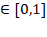
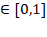

LSD Macro
Language
Search the Macros of
interest below, considering that most of them are part of a family with postfixes L, S, LS etc. For example, the Macro V(
) is part of a family of Macros
together with VL(
), VS(
) and VLS(
).
|
Return values |
Modify values |
Operate on structures |
Other elements |
||
|
|
|
|
|
||
|
|
|
|
|
||
LSD equation file structure
A simulation run consists in a sequence of
time steps, during each of which every Variable
in the model is updated. That is, a piece of code is
executed, normally returning a numerical value that is associated to the
Variable for that time step. The LSD Equations are these pieces of codes.
The parts of the code for
the Equations are
separated in blocks (see below). Usually, they are located all in a
single file, called the equation file, which is compiled
together with the rest of the LSD source code. Normally, this is done using LMM and therefore the
user should find the Equation file automatically pre-filled with the minimum
required code.
The only required lines in
the Equation file are the following:
#include
"../src/fun_head_fast.h"
MODELBEGIN
MODELEND
void close_sim( )
{
}
The
user should place the Equations only after the keyword MODELBEGIN and before MODELEND.
Every Variable has its own
Equation, although a model normally contains many copies of a Variable. In this
case, the same piece of code is executed as many times
as many copies (instances) of the Variable exist, but, of course, the values
used in each execution may change. In fact, Variables (and Parameters) are located within Objects, so each copy (or instance) of an
Object contains a different copy (or instance) of the Variable, under the same
names. The Equations code always refers to an Object. For example, suppose an
Object named Firm
contains a Variable called Q that depends on another Variable, named K. If there are many copies of the
Object Firm, each instance of the Equation for Q, that require K for its computation, will refer to
its own copy of K (a
particular value), that is, the copy of K contained in the same Object as the copy of Q currently under computation.
The Equations code for all
the Variables is usually located in a single file. The order in which the
Equations appear in the file is irrelevant, since LSD automatically evaluates
which sequence of Variable computations needs to be executed.
Therefore, each Variable and the associated Equation must be
thought of as a difference equation, written independently from one
another and computed at the generic time t:
Xt = f ( Yt-lag, Zt-lag, ... )
Equation code may also use
LSD Parameters. Parameters are numeric values defined by LSD to be used in Equations in the same way as variables.
Parameters are not defined by specific Equations,
instead, they are set by the LSD configuration in use when the simulation
starts and often remain constant along the entire run. However, Parameters can
be still changed by other Variables Equations on-the-flight, see Macros like
WRITE(
) or INCR(
), being the modeler responsible for
the control of the update timing and value.
LSD Equation files are composed by standard C++ code plus LSD-specific keywords
(Macro, Object, Variable and Parameter names). All LSD Macros are named in upper case. The labels of LSD Objects,
Variables and Parameters must be represented within straight quotation marks (""), as in "Lab", without any trailing or leading
blank characters (like spaces). Labels not inside quotation marks are interpreted as regular C++ identifiers and not as LSD
names, more likely leading to compilation errors. In C++ terms, LSD labels for
Variables and Parameters must be null-terminated (likely constant) character
arrays. In the LSD Macros presented below, all the included quotation marks are
compulsory for proper simulation operation. Also, all identifiers not inside
quotation marks are intended to be C++ identifiers, most usually regular C++
variable names (like p, c, cur etc.) used in LSD to create the
Equations code. There is no connection of LSD Variables (and Parameters) with
C++ variables, even if they share exactly the same name (which may be confusing
but is perfectly legal).
LSD also accepts no Macro,
standard C++ code to be used. In this
case the actual LSD functions must be expressed in pure C++, please refer to
the manual for the original LSD language for
details. This is not the recommended approach to most users, in particular less
experienced programmers.
EQUATION( "Lab" )
The keyword EQUATION(
) starts a block of code in the equation file, to be associated to a Variable (or a Function), as in the example below:
EQUATION( "Lab" )
/*
Normally here should be place a comment, specifying what the equation does
*/
RESULT( 3 ) // This Equation
assigns always the value 3 to any copy of variable Lab
The first line indicates
that the code refer to the Variable (or Function) labelled Lab. After
the initial line normally it is added a comment
(highlighted in green). The following lines can contain any LSD (or C++) code.
The last line must be indicated with the keyword RESULT(
), where in
between the parenthesis it is contained the value that the Variable (or
Function) is to be assigned.
If EQUATION( "Lab" ) is associated to a Variable named Lab,
each instance (copy) of the Variable must be computed once and only once at
every time step. Therefore, for example, if other Variables uses its value in
other Equations, than the Equation provides always the same value during the
same time step. That is, the numerical value of an instance of Lab at
time t is always identical.
Notice that, because of
this particular updating scheme, the concept of Equation when used together
with a LSD Variable is very different from the operation of a regular
subroutine or procedure in most computer languages. Subroutines and procedures are usually reevaluated every time they are invoked,
irrespective to the relative timing between calls. A similar updating scheme,
despite not commonly used in LSD models, can be performed if the Equation is
associated with a Function instead of a Variable (this association is defined during
the model structure configuration).
LSD offers numerous Macros
to be used when creating Equations. The most
frequently used is V(
) that simply computes or retrieves the value of another Variable,
Function or Parameter in the model. When the computations required for an
Equation or a Function are slightly less than trivial, it is common to use
temporary variables to store intermediate results. For example, consider the
following Equation:
EQUATION( "PROF" )
/***************************
The equation computes the profit rate:
PROF(t) = P(t) * A(t-1) - C - RIM RIN * Inn
profits per unit of capital are equal current price times lagged productivity
minus the cost for research (innovative firms spend for both type
of research) and fixed costs.
***************************/
RESULT( V("Price") * VL("A", 1) -
V("C") - V("RIM") - V("RIN") * V("Inn")
)
Temporary
numeric storage: v[n]
The standard way to express
an Equation is to collect a set of data from the model (Variables and
Parameters) and then to elaborate on them to provide the desired result value
for the current Variable. Since the LSD Macros to collect the required data may
be quite long, it is considered good practice to store
the intermediary values to be used in numerical temporary storage. It may be
preferred to store the intermediate values used in the final computation in the
LSD provided temporary storage called v[0], v[1], v[2] etc.
Up to 1,000 temporary
storage positions are available (from v[0] to v[999]) to each Equation. The values of v[
] are reset for each Equation, and therefore
cannot be used to transfer information from one Equation to another or between
different time steps of the same Equation. Technically, this storage is configured as a volatile C++ double precision array.
Example
The example above can be rewritten using the temporary storage:
EQUATION( "PROF" )
/***************************
The equation computes the profit rate:
PROF(t) = P(t) * A(t-1) - C - RIM RIN * Inn
profits per unit of capital are equal current price times lagged productivity
minus the cost for research (innovative firms spend for both type
of research) and fixed costs.
***************************/
v[0] = V( "Price" );
v[1] = VL( "A",1 );
v[2] = V( "C" );
v[3] = V( "RIM" );
v[4] = V( "RIN" );
v[5] = V( "Inn" );
RESULT( v[0] * v[1] - v[2] - v[3] - v[4] * v[5] )
This practice has several
advantages. Firstly, the code generally is more readable when using shorter
symbols for values. Secondly, the intermediate values can be
observed using the LSD Debugger, so tracing
errors get easier. Thirdly, if a value is used many times in the same Equation,
it is faster and less prone to errors to store the value in a v[
] temporary variable and just re-use it instead of re-calling the Macro
providing it.
Object pointers available to
Equations' code
Most LSD Macros are
operated within an Object, as in the examples above (and almost
always), defined by the pointer p. The reason why (most of) LSD
Macros are operated in Objects is that the same Equation code is, in general,
reused by many copies (or instances) of the Variable it refers to. For example,
consider a model with an Object Firm containing Variables Profit,
Price and Quantity, and the Equation for Profit is
(neglecting the temporal index):
Profit = Price × Quantity
In general, the model may have many copies of
Object Firm, and each copy of Variable Profit must use the values
of Quantity and Price referring to the same instance of Object Firm.
LSD takes care automatically of identifying the correct values in the code of
the Equation, using the Object the LSD Variable is attached
to as the reference. In particular:
· p refers to the Object containing the
Variable whose Equation is being computed
· c refers to the Object that requested
the computation of the Variable
· cur, cur1, cur2 etc. are temporary pointers, which can store
the current addresses of Objects obtained from other LSD Macros
Parent Object: p
This symbol
refers to the Object containing the Variable whose Equation is being executed
(p for parent of the Variable).
Since most of the operations in an Equation concerns the values in the same
Object, this Object is the most frequently used in the Equations, and in most
of cases the LSD Macros allow to use it by default without specifying it.
Caller
Object: c
In most cases, Equations
computing some Variable's values are executed because
other Equations needed those values. The pointer c in an Equation points to the Object that
caused that Equation to be computed (c reads for caller for the computation of the
Variable), if any. If an Equation is computed only
because LSD requested so, because no other Equation triggered the computation,
then c is defined as NULL, a conventional value.
Typically the object c is used in a Function to acquire more contextual
information, since these are not computed unless another Equation explicitly
requests their calculation.
Temporary Object's pointers: cur, cur1, cur2,
Besides temporary variables
for intermediate numerical values, LSD also provides a predefined group of
temporary pointers to Objects: cur and from cur1 to cur9. These elements are generic pointers to
Objects, used to temporary store the addresses of required Objects (like v[
] is used to stored temporary numerical values).
Typically, the user calls
LSD Macros returning Objects and assigns the results to cur, cur1,
and uses the pointer to use another
Macro requiring it as an operand. See the examples of LSD
Macros returning Objects.
For example, when creating
a new Object, one wants to initialize its Parameters. This is
done by storing the new Object address in a temporary pointer and
applying the LSD required Macros on it. For example, the following lines within
an Equation create a new Object of type Firm and set to 0 its Variable K (see details in the description of
the LSD Macros listed below).
...
cur = ADDOBJ( "Firm" );
WRITELS( cur, "K", 0, t );
...
Objects relatives: up,
next, root
The information in this
paragraph is not necessarily relevant for writing LSD models. But it explains the technical implementation of a LSD model
that can be used to optimize a models code.
Every Object (for example, p, c etc.) is related
to its relatives in the model hierarchy tree. Every Object can therefore
connect to its direct relatives using the links to them. The linking pointers can then be constructed, using C++ syntax, using the
following components:
· The top Object in the model
hierarchy is root
which has no up or next relatives
· p->up is the Object containing the Object
(or the parent to) in which the current Variable is being calculated;
relatedly, c->up
and cur->up points to the parent of the caller
Object and of the object pointed by cur
· p->up->up, c->up->up and cur->up->up points to the grandparents of the
Objects p, c and cur, and so on
· p->next is the Object instance immediately
following the current Object (or a brother to) in the list of descendants from
its parent p->up;
all the Objects in the brotherhood chain share the same parent Object and the
last Object in the chain has p->next equal to NULL
· Similarly, c->next and cur->next are brothers of c and cur, respectively
Any upper
level or younger brother Objects in the model hierarchy tree can be reached
by arbitrary combinations of up and next departing from a given Object, however, the
exploration of lower level or older brother Objects require the use of the SEARCH(
) Macro family, likely in
combination.
The best
way to remember the object's components is to keep in mind a geometrical
representation of Objects:
root
/\
||
.
.
.
/\
||
up
/\
||
+------+
|object| => next => ... => NULL
+------+
The linking
pointers above are proper Objects and therefore can be used
as LSD Macro operands. For example, consider a model where you have 100 Objects
of type Firm descending from a single Object named Market. In
turn, each Firm Object has about 1,000 Objects of type Worker
descending from it, as in the representation below:
root
/\
||
+--------+
| Market | (contains variable Price)
+--------+
/\ /\
|| ||
|| ++========++
|| ||
+--------+ +--------+
+--------+
+--------+
+----------+
| Firm 1 | => | Firm 2 | => | Firm 3 | => | Firm 4 | => . . .
=> | Firm 100 |
+--------+ +--------+
+--------+
+--------+
+----------+
/\
/\
/\ /\
/\
||
|| . .
. . .
.
. . .
|| ||
||
+----------+
+----------+
+-------------+
|| | Worker 1 |
=> | Worker 1 | => . . . => | Worker 1000 |
||
+----------+
+----------+
+-------------+
+----------+ +----------+
+----------+
+-------------+
| Worker 1 | => | Worker 1 | => | Worker 2 | => . . . => |
Worker 1000 |
+----------+ +----------+
+----------+
+-------------+
If a
Variable in Firm uses a common Variable from Market, say, Price,
you can write the line of code:
v[0] = V( "Price" );
However, it
will take significant time to work out, because the system will have to visit
and discard all the Objects Worker for each of the Objects Firm before
moving up to look for the Variable Price in Object Market. In
fact, the Macro V(
) will initially search down, into Worker, for a Variable or
Parameter Price. Only if it does not find it downward in the tree, it
will look then upwards, trying to find Price in the parent Market.
This means that LSD has to skip 100,000 Objects, in total, before computing the
100 instances of the Firms Variable. Instead, using the code line:
v[0] = VS( p->up, "Price"
);
directly
provides the desired value, since the first Object searched is p->up, which is Market. Note that, for
using pointer constructs, the modeler must be sure that final pointed Objects
exist. If, in the example above, the Equation is placed
in Object Market then p->up now points to root and there is no Variable Price there,
so the simulation will issue an error and stop.
Temporary Link's pointers: curl, curl1, curl2,
Similarly to pointers to Objects, these elements
are generic pointers to Links connecting Nodes (represented by LSD Objects)
within a network, if any. They are used to temporary store the addresses of
required network Links for LSD Macros requiring or returning Links as operands
or as results. See the examples of LSD Macros returning
Links.
Model specific objects and other C++
data structures
The Object pointers
discussed above (p, c, cur etc.) are all local Objects, in the sense
that they represent a different content depending on the Equation in whose they
are used. That is, they refer to Objects that, depending on the Variable whose Equation
is computed, change their content when the Variable
computed changes: p refers to the Object instance whose Variables
are under computation; c to the Object that caused the
Variable to be computed; cur and the others are assigned within
the Equations code.
However, the modeler can
create and use global Object pointers (and other pure C++ data structures),
that is, pointers (or data structures) that have persistent content throughout
a simulation run. This is mainly done for optimization
purposes, when a very large model (many Objects and hierarchical layers)
contain Variables that refer frequently to one specific Object copy (or
particular data structure). The use of global Object pointers
(or pure C++ data structures) should be avoided by unexperienced modelers,
because they frequently create errors difficult to be catch.
To use a global Object,
declare the global Objects or C++ data structures as a single C++ macro named EQ_USER_VARS (several objects items can be separated by ;) outside the scope of the Equation area, that
is, on the beginning of the Equation file and just before the keyword MODELBEGIN.
The declaration
line must be something like:
#include
"../src/fun_head_fast.h"
#define
EQ_USER_VARS object *market;
MODELBEGIN
EQUATION( "Init" )
/*
Technical initialization function. It is computed only
once and then it is
transformed in a parameter and never computed again.
Sets the global pointer 'market' pointing to the Object Market, so
to speed up the access to this object
*/
market =
SEARCH( "Market" ); //assign the C++ object pointer
"market" to point to the LSD Object Market
PARAM; //optional; transform "Init"
in a parameter so to not compute again this equation
RESULT( 1 )
where the name of the Object
("market" in the example) must not be one of the existing Objects (p, c, cur, etc.). The Object must be assigned with one of the LSD Equation Macros
returning Objects within an Equation. For example, there may be a Variable
called Init making such assignment. The
Variable Init must be
computed for sure before market is used in any other Equation.
This can be ensured placing Init in the Object
root, since the simulation step starts always the
computation from the Variables contained in the topmost level (i.e., root) of the model structure tree. With the setting
described above, the modeler can use market as any other Object, knowing
that it refers always to the LSD Object Market. For example, the
Equation for a Variable placed anywhere in the model may use the line:
v[0] = VS( market, "Price" );
and be sure that the value of Variable Price
is returned efficiently. Note that the usual line
v[0] = V( "Price" );
would also work, but likely less
efficiently, as it would cost computation time in case the Variable whose
Equation containing the line for Price is placed far away from Market.
Modelers using global
Objects or other C++ data structures should be careful when assigning
configurations with many copies. If, for example, the model configuration uses
many instances of the Object Market, any use of the global object market would refer only to the very first
copy of the Object Market, certainly undermining the model operation.
Postfixes and Macro families
Most of the
LSD Macros, like V(
) used in the examples above, come as
a family where the name of the Macro can be expressed with no postfix, or with
L, S, LS etc. as postfix. The postfix L stands for Lag, indicating that
the operation refers to past values. The postfix S indicates a Specific object copy/instance.
Consider that any LSD operation is performed, at each
time step, in a given Equation. Therefore, the time now and the Object
containing the Variable whose Equation is being executed are used by default
when no postfix is supplied. Otherwise, for operations that must refer to past
time steps, or to Objects different from the one containing the Variable whose
Equation is under execution, the modeler must use one of the post-fixed
versions of the LSD Macro and provide the necessary details:
· If no postfix is specified the Macro
is supposed to refer to the Object containing the Variable under computation
and to the current time step.
· The postfix L means that the Macro apply to the same Object
containing the Variable under computation, but must be specified the lag to
which the operation refers to.
· The postfix S means that the Macro contains the
specification to the Object to which it must be applied, and it refers to the
current time step.
· The postfix LS means that the Macro is applied to the lag
and to the Object specified.
The
Equation's code can always use two Objects that are available to the modeler.
One is p, which indicates the Object containing the Variable under computation.
The other is c which refers to the Object containing the
Variable that triggered the computation of the Variable under computation.
V(
"Lab" ), VS( obj, "Lab" )
VL( "Lab", lag ), VLS( obj, "Lab", lag
)
These are the most used LSD
Macros. They return the value of the Variable or Parameter with label Lab.
The forms VL(
) and VLS(
) permit to specify a lag, so that the
values returned concern the value of Lab with lag lags. The forms
VS(
) and VLS(
) specify in which specific Object the Parameter
or Variable must be searched for. In V(
) and VL(
), where no Object is specified, the search
starts from p
(see available Objects).
In case
the model contains many instances of Variables with the same label Lab
(that is, many instances of Object containing this Variable), the Macro returns
the value of the instance "closer" to the Object where the search
start from. By closer, it is meant the first instance
found by searching the model using the following strategy:
1) Search in the Objects Variables and Parameters
(the one specified in the Macro call)
2) Search in the Object descending Objects
(progressively to the lowest level in the hierarchical tree
3) Search in the Object parent Object (gradually
up to the root level)
In each Object explored,
the same strategy is applied recursively, so that every Object in the model is visited, if necessary. So, for example, if there is only
one instance of Variable Lab in the model, this can be
found in any upstream or downstream Object, wherever the search is
started.
Example
Consider the Equation Qt = Kt-1 × At
The code may be as follows:
EQUATION( "Q" )
/*
Compute the quantity Q as the product of lagged capital K and current
productivity A
*/
RESULT( VL( "K", 1 ) * V( "A" ) )
or, equivalently:
EQUATION( "Q" )
/*
Compute the quantity Q as the product of lagged capital K and current
productivity A
*/
v[0] = VL( "K", 1 );
v[1] = V( "A" );
RESULT( v[0] * v[1] )
In the second case, the two
temporary variables v[0] and v[1] are used to store the intermediate
results, which can be observed during a debugging session, so that modeler can
trace possible unexpected results.
SUM( "Lab"
), SUMS( obj, "Lab" )
SUML( "Lab", lag ), SUMLS( obj,
"Lab", lag )
These Macros search, with
the same strategy described in V(
) (see also the different forms), an instance of the Variable or
Parameter Lab. Then, they keep on summing up all the values of instances
of the Variable or Parameter named Lab (with the lag lag,
if specified), found in the set of Objects which are brothers to the first
found. Normally, they are used to sum up the values of
a given Variable of descending Objects.
Warning
If the selected Variable or
Parameter Lab is contained in an Object which has zero instances (all
copies were deleted during the simulation run), the macro will return the
special value NAN (not
a number). So, if the modeler knows this situation is expected, she must always
check the value returned by SUM(
) for NANs (using the function is_nan(
)) and handle the Equation
computation accordingly. If required, please refer to the USE_NAN Macro to allow NANs to be used as legal
Variable values in LSD. These restrictions apply to all Macros returning values
computed from Variables and Parameters values.
Example
If Q_TOT is
contained in an Object named Market, from which descend a set of Objects
named Firm containing a Variable with label Q, its Equation can be coded as:
EQUATION( "Q_TOT" )
/*
Compute the sum of all Q's in the market
*/
RESULT( SUM( "Q" ) )
Note that, if your model
contains many Objects Market, this Equation will sum up only the Q's contained
in the set of descendants of Market, and not all the Q's existing in the model.
MAX( "Lab"
), MAXS( obj, "Lab" )
MAXL( "Lab", lag ), MAXLS( obj,
"Lab", lag )
Same as SUM(
), but, instead of the sum, these Macros compute the maximum value of the
Variable or Parameter named Lab among the descendants of the current
Object (p) or obj,
using the appropriate lag.
MIN(
"Lab" ), MINS( obj, "Lab"
)
MINL( "Lab", lag ), MINLS( obj,
"Lab", lag )
Same as SUM(
), but, instead of the sum, these Macros compute the minimum value of the
Variable or Parameter named Lab among the descendants of the current
Object (p) or obj,
using the appropriate lag.
AVE( "Lab" ), AVES(
obj, "Lab" )
AVEL( "Lab", lag ), AVELS( obj,
"Lab", lag )
Same as SUM(
), but, instead of the sum, these Macros compute the average (arithmetic
mean) of the Variable or Parameter named Lab among the descendants of
the current Object (p) or obj,
using the appropriate lag.
WHTAVE( "Lab1",
"Lab2" ), WHTAVES( obj,
"Lab1", "Lab2" )
WHTAVEL( "Lab1", "Lab2", lag ),
WHTAVELS( obj, "Lab1", "Lab2",
lag )
Same as SUM(
), but, instead of the sum, these
Macros compute the weighted average of the Variable or Parameter named Lab1
among the descendants of the current Object (p) or obj,
using the Variable or Parameter Lab2 as the weight, that is, the sum of
the products between the values of Lab1 and Lab2, over the
appropriate lag. Both Variables Lab1 and Lab2 must be contained
in the same Object.
SD( "Lab" ), SDS( obj,
"Lab" )
SDL( "Lab", lag ), SDLS( obj,
"Lab", lag )
Same as SUM(
), but, instead of the sum, these Macros compute the (population)
standard deviation of the Variable or Parameter named Lab among the
descendants of the current Object (p) or obj,
using the appropriate lag.
COUNT( "obj_Lab" ), COUNTS( obj, "obj_Lab"
)
COUNT_ALL( "obj_Lab" ), COUNT_ALLS( obj, "obj_Lab"
)
These Macros explore the
model counting for the number of instances of the Object named obj_Lab. That is, they count only within the
descendants of obj, if specified in COUNTS(
), or in p if obj
not specified in COUNT(
),
and their descendants. Therefore, the search is not exhaustive over the entire
model, unless it is started from the root of the model.
The COUNT(
) versions only explore a single
group of Object instances, that is, a set of Object instances named obj_Lab under a single parent Object. If there is
more than a group, it considers only the first one. The COUNT_ALL(
) versions consider Object instances in all groups of Objects descending
from the selected Object type (obj or p)
including all of its instances.
The Macros return the
number of instances of the Object or zero if no Object or instance is found.
STAT(
"Lab"
), STATS( obj, "Lab"
)
These Macros works as the
Macro SUM(
), but, instead of the sum, they compute a set
of descriptive statistics of the Variable or Parameter named Lab among
the descendants of the current Object (p) or obj. These Macros return
the number of instances found for the Variable or Parameter named Lab
and also store a set of values in the temporary storage v[
]. Namely,
it places in v[
] the following values:
·
v[0] : number of instances/copies (same as the
Macro return value)
·
v[1] : average of Lab
·
v[2] : variance of Lab
· v[3] : maximum values
· v[4] : minimum values
INTERACT(
"Comment", value ), INTERACTS( obj,
"Comment ", value )
These
Macros interrupt the simulation run and open the LSD
Debugger window, presenting the message Comment. The Object shown in
the debugger is the same Object containing the Variable under computation
(which has the INTERACT(
)
call) or the specified Object obj. Contrary to the debugger usual
behavior, additionally to the name of the Variable just computed, the interface
presents the value chosen (the default to be used) in a numeric data
entry field. User can input a new value as any C++ numeric constant or
variable, typically one of the v[
] temporary elements. The value typed
in by the user will be returned by the Macro as its
result.
This Macro inserted in an
Equation allows the run to be modified according to
the choice of an interacting user.
Example
For example, an Equation
may contain the following code:
v[1] = V(
"MinMarketShare" ); //minimum
m.s. below which a firm should be removed
CYCLE_SAFE( cur, "Firm" )
{ //Cycle through each firm, allowing for the removal of
the pointer
v[0] = VS( cur, "MarketShare" ); //read
the market share
if ( v[0] < v[1] )
v[5] = INTERACTS( cur, "Remove this firm? (1=yes; 2=no)",
v[4] );
if
( v[5] == 1 )
{ //remove if the answer was 1
DELETE( cur );
v[3]++;
}
}
The cycle removes all Firms
having market shares smaller than a given value and that the user permitted to.
Warning
Beware that such a Macro
used in a model requires the user to interact with it. See LOG(
) and SLEEP(
) for an alternative to show
information to the user without fully stopping the simulation or requiring effective
user interaction.
SEARCH(
"obj_Lab" ), SEARCHS( obj, "obj_Lab"
)
These Macros explore one
single branch of the model searching for the first instance of the Object named
obj_Lab. That is, they search only within the
descendants of obj, if specified in SEARCHS(
), or in p if obj
not specified in SEARCH(
),
and their descendants. Therefore, the search is not exhaustive over the entire
model, unless it is started from the root of the model (as root is a pointer and not an Object name, you do
not enclose it in quotation marks) or from an ascending Object like p->up (parent) or p->up->up (grandparent). SEARCH_CND(
) can also be considered for a more
exhaustive search of the model (see below).
The Macros return the
pointer to the found Object or NULL if no Object is found.
Example
The result from SEARCH(
) is usually attributed to a
temporary pointer for later usage, like in the following piece of code where an
Object looks for a grandparent Object named Market, saves its address to
temporary pointer cur and uses it to retrieve the
grandparents Variable TotalSales:
cur = SEARCH( p->up->up, "Market" );
v[1] = VS( cur, "TotalSales" );
SEARCH_CND( "Lab", value ), SEARCH_CNDS( obj, "Lab", value )
SEARCH_CNDL( "Lab", value, lag ), SEARCH_CNDLS( obj, "Lab", value, lag )
These Macros are used to find an Object in the model that contains the
Variable named Lab with the specific numeric value value.
The search can optionally consider obj as the
starting point for the search (instead of the current Object under calculation,
p) and the specific lag lag if different
from current time step.
Differently from SEARCH(
), SEARCH_CND(
) family uses the same strategy to
explore the model as described in Macro V(
) above, which eventually encompasses
the entire hierarchical Object tree. However, it may not stop at the first
instance encountered, but continues until the searched Variable is found in an
Object instance which has the desired Variable set to value.
When the first Object that satisfies the condition is found, it is returned to
the calling Equation, and can be used with other LSD Macros like VS(
).
The Macros are used to find a particular Object, which is neither the
parent p
nor the caller c. If no Object instance containing the
searched value is found, SEARCH_CND(
) family returns a NULL pointer.
Example
Suppose you want to extract
randomly a Firm from a group of 100 instances, and that these contain a
Parameter IdFirm set from 1 to 100,
you can use the following code to set a pointer to it in cur:
v[0] = uniform_int( 1,
100 );
cur = SEARCH_CND( "IdFirm", v[0] );
RNDDRAW( "obj_Lab", "Lab" ), RNDDRAWS( obj, "obj_Lab",
"Lab" )
RNDDRAWL( "obj_Lab", "Lab",
lag ), RNDDRAWLS( obj, "obj_Lab", "Lab", lag )
These Macros search for a
group of Objects named obj_Lab and returns a
pointer to one of them, randomly chosen with probability proportional to the
values of the Variable labeled Lab in the same Object. The Macros can
optionally consider obj as the starting point
for the search (instead of the current Object under calculation, p) and the specific lag lag if different
from current time step.
Example
Consider the Equation for DrawAFirm
which has to return the value of Parameter IdFirm
in one randomly selected Firm among the Objects Firm descending
from the Object where DrawAFirm is contained
in. The Equation could be:
EQUATION( "DrawAFirm"
)
/***************************
Return the Id of a Firm chosen randomly with probability
equal to the square of the market shares.
***************************/
CYCLE(
cur, "Firm" )
{
v[0] = V( "ms" );
WRITES( cur, "Prob", v[0] * v[0] );
}
cur = RNDDRAW( "Firm", "Prob" );
RESULT( VS( cur, "IdFirm"
) )
The code assigns to the
Parameter Prob in each Firm the square
of their market shares (ms), so drawing
probability is defined by Firms squared ms, and then draws randomly one of them, returning
its address to be stored in cur.
RNDDRAW_FAIR( "obj_Lab"
), RNDDRAW_FAIRS( obj, "obj_Lab" )
These Macros are identical
to RNDDRAW(
) but use the same probability for
all Objects, that is, all Objects named Lab have the same probability of
being drawn. The Macro can optionally consider obj
as the starting point for the search (instead of the current Object under
calculation, p).
Example
The following Equation
returns the Parameter IdFirm from a randomly
chosen Object Firm.
EQUATION( "DrawAFirm"
)
/***************************
Return the Id of a Firm chosen randomly with identical
probabilities for each object
***************************/
cur = RNDDRAW_FAIR( "Firm" );
RESULT( VS( cur, "IdFirm"
) )
RNDDRAW_TOT(
"obj_Lab", "Lab", total
), RNDDRAW_TOTS( obj, "obj_Lab", "Lab", total )
RNDDRAW_TOTL( "obj_Lab", "Lab",
lag, total ), RNDDRAW_TOTLS( obj,
"obj_Lab", "Lab", lag,
total )
These
Macros are identical, but faster, to RNDDRAW(
) as the modeler explicitly provide
the (correct) sum of all the weights, that is, the sum of the Variable named Lab
among all Objects with label obj_Lab.
Unpredictable drawing behavior is expected if total is not equal to the
sum of all pertinent weights. The Macros can optionally consider obj as the starting point for the search (instead of
the current Object under calculation, p) and the specific lag lag if different from current time step.
WRITE( "Lab", new_value
), WRITES( obj, "Lab", new_value )
WRITEL( "Lab", new_value, time
), WRITELS( obj, "Lab", new_value, time )
WRITELL( "Lab", new_value, time,
lag ), WRITELLS( obj, "Lab",
new_value, time, lag )
These Macros write the
value new_value in the Variable or Parameter
named Lab. In the case of a Variable, it is possible to make appear
as if the time of latest computation for the overwritten Variable is time.
That is, after the Macro is executed, the Variable Lab will appear to
LSD as if its last computation had been executed at time time,
and the result of the Equation were new_value.
If the label Lab corresponds to a Parameter, the field time is ignored. The Variable must be contained in the Object obj, (or in p if obj
not specified), otherwise the Macros return an error and stop the simulation.
Additionally, the LL versions of the Macro allow also
modifying lagged values of a Variable (the fields time
and lag are ignored for Parameters). This means that one can rewrite
the past, changing the value LSD would retrieve if a lagged value of the
Variable is subsequently requested (in a VL(
) command, for instance). Warning: this can be a very dangerous practice
and is only recommended to correctly initialize lagged
values of Variables in Objects created in the middle of the simulation.
Warning
These Macros can be very
useful to implement complex situations, but they should be
used with extreme care because they potentially disrupt the automatic
updating system of execution of the Equations. The best practice is to use WRITE(
) to change Parameter values during
the simulation. Another frequent use of WRITE(
), when used with Variables, concerns
the initialization of newly added Objects.
See RECALC(
) for another, less invasive Macro to
force the reevaluation of already calculated (or just created) Variables.
INCR( "Lab", value ),
INCRS( obj, "Lab", value )
These Macros add value
to the numeric content of the Variable named Lab. They work only if
Variable Lab is contained in Object obj,
or in the current Object p if obj is not specified, otherwise it produces an error. The Macros
also return the new value after the increment.
INCR(
) Macro family should be used preferably with
Parameters, for the same reasons explained in the WRITE(
) Macro family.
MULT( "Lab", value ),
MULTS( obj, "Lab", value )
These Macros multiply the
numeric content of the Variable named Lab by value. They work
only if Variable Lab is contained in Object obj,
or in the current Object p if obj is not specified, otherwise it produces an error. The Macros
also return the new value after the multiplication.
MULT(
) Macro family should be used preferably with
Parameters, for the same reasons explained in the WRITE(
)family.
CYCLE( cur,
"obj_Lab" ) { }, CYCLES( obj_from, cur,
"obj_Lab" ) { }
CYCLE_SAFE( cur, "obj_Lab"
) { }, CYCLE_SAFES( obj_from, cur, "obj_Lab"
) { }
These
Macros scan all the Objects labelled obj_Lab
descending from current Object p or from the specified Object obj_from, assigning
cyclically the pointer cur specified to the address of each target
Object. Nested CYCLE(
)s can be used, provided that the pointers (cur, cur1, cur2,
) differ for the different levels.
Example
For example, consider a
model including Object Market containing Objects Firm. An
Equation in an Object containing a set of Markets, for example,
representing countries, can use the following nested code:
v[0] = 0; //
set to v[0] to be initially 0
CYCLE(
cur, "Market" )
{ // for each market
CYCLES( cur, cur1, "Firm" )
{ // for each firm, contained in
cur
v[1] = VS( cur1, "Profit" );
v[0] = v[0] + v[1];
}
}
// from here v[0] contains the cumulated profits
The cur pointer cycles through all Objects named Market
(supposing there is more than one). In turn, for each Market the pointer
cur1 cycles through each Object
labelled Firm that is contained in this specific Market. For each
Firm, v[1] receives the value of the Variable
named Profit related to that particular Firm, which is
subsequently accumulated in v[0].
See also
the example for RNDDRAW(
).
Warning
Never use DELETE(
) inside a CYCLE(
) to remove one of the Objects being
cycled at any nesting level. In fact, deleting any Object pointed to by cur prevents the CYCLE(
)from identifying the next one in the
brotherhood chain. Instead, use the alternative Macros CYCLE_SAFE(
). In this case, it is possible to delete the Object pointed by the
cycling pointer cur. However, it is not possible to
nest different CYCLE_SAFE(
) levels.
The example below is a
mistake because cur1 is deleted within a CYCLE(
) command:
ERROR - ERROR - ERROR
CYCLE(
cur, "Market" )
{ // for each market
CYCLES( cur, cur1, "Firm" )
{ // for each firm, contained in
cur
v[1] = VS( cur1, "Profit" );
if ( v[1] < 0 )
DELETE( cur1 ); // ERROR: this
undermines the inner CYCLE
}
}
ERROR - ERROR
- ERROR
Instead, the correct code
should be:
CYCLE(
cur, "Market" )
{ // for each market
CYCLE_SAFES( cur, cur1, "Firm" )
{ // for each firm, contained in
cur
v[1] = VS( cur1, "Profit" );
if ( v[1] < 0 )
DELETE( cur1 );
}
}
ADDOBJ( "obj_Lab" ), ADDOBJS( obj,
"obj_Lab" )
ADDOBJL( "obj_Lab", t_upd ), ADDOBJLS( obj,
"obj_Lab", t_upd
)
ADDNOBJ( "obj_Lab",
num ), ADDNOBJS( obj,
"obj_Lab", num
)
ADDNOBJL( "obj_Lab", num ), ADDNOBJLS( obj,
"obj_Lab", num
)
These
Macros add one (or more) new instance(s) to the Object named obj_Lab descending from obj,
or to p
if obj is not specified. ADDOBJ(
) returns a pointer to the newly
created Object. More than one Object instance can be created at once if their
number num is informed in the ADDNOBJ(
) formats. In this case, a pointer is returned only to the first created Object instance. The
additional instances can be easily reached by using the next construct over the first instance (i.e., by
using cur->next, cur->next->next etc.).
The ADDOBJ(
) versions initializes the newly
created Object instance(s), that is, sets the values for its Parameters and
lagged Variables, according to the values defined in the model configuration
(and modified by the simulation until the current time step.
The
Macros without the L suffix
set the new Object instance(s) as modified by the simulation during the current
time step, that is, its (their) Variables are going to be updated only in the
next time step. Instead, the Macros with the L suffix allow for the definition of the time
of the last update t_upd for all of the
Objects Variables, if t_upd is positive or
zero. If t_upd is negative, the effective time
of last update from each Variable of the original copied Object instance (or
current time, if the Variable was never updated).
In case the
original Object named obj_Lab was defined as having descendants (at any level), the Macros
builds the whole structure of descendants also under the new Object
instance(s). As the Macros return the address of the newly created Object(s),
the modeler can easily add in the creation Equation some customized
initialization code. See Macro family WRITE(
) for details on changing the initial
values of Variables (including lagged values) and Parameters.
If the original (and so,
the new) Object is set to save the values of all or some of its Variables,
these will be available for the post-simulation Analysis of Results. The data
concerning the periods before an Object introduction in the simulation is filled with missing values (NA).
Example
For example, you can have
an Equation for a Variable in the Object Market that contains the following:
cur = ADDOBJ( "Firm" );
WRITES( cur, "DateBirth", T );
The lines above create a
new Object Firm, which has the same initial data as the first Object in
the model file at the current time step. Then, the code modifies the new Object
Parameter named DateBirth, storing there the
current time step.
Warning
The newly created Object
can only be added to a parent Object which already
has, at least, one descending Object (son) labelled as obj_Lab.
ADDOBJ_EX( "obj_Lab", obj_ex
), ADDOBJ_EXS( obj, "obj_Lab",
obj_ex )
ADDOBJ_EXL( "obj_Lab", obj_ex ), ADDOBJ_EXLS( obj,
"obj_Lab", obj_ex
)
ADDNOBJ_EX( "obj_Lab",
num, obj_ex
), ADDNOBJ_EXS( obj, "obj_Lab",
num, obj_ex )
ADDNOBJ_EXL( "obj_Lab", num, obj_ex ),
ADDNOBJ_EXLS( obj, "obj_Lab",
num, obj_ex )
The ADDOBJ_EX(
) are special versions of ADDOBJ(
) Macro which use the specific
modeler supplied example Object
pointer obj_ex to initialize the newly
created Object instance(s), generating one or num
new instances, each one a clone of obj_ex. A
pointer is returned only to the first created Object
instance. The additional instances can be easily reached by using the next construct over the first Object (i.e., by
using cur->next, cur->next->next etc.).
Please
check more details about the new Object(s) creation, including initialization,
in ADDOBJ(
).
Example
For example, suppose that
in Market Object one wishes to add a new Firm
that is a clone of the most productive existing Firm. The following code
identifies the Object Firm with the maximum productivity and adds a new Firm
with the same initialization data of this Firm:
cur = SEARCH( "Firm" );
v[0] = MAXS( cur, "A" );
cur = SEARCH_CND( "A", v[0] );
cur = ADDOBJ_EX( "Firm", cur );
The first line retrieves
the address of the first Firm in the brotherhood
chain. The second line finds the value of the highest productivity among the
existing Firms. Then, the Macro SEARCH_CND(
) returns a pointer to the first
Object that has the maximum productivity. Finally, this Object is used as an example for the creation of the new Firm.
Note that the same temporary pointer cur is used
(1) to store the address to the first Firm, (2) the pointer to most
productive Firm and then, (3) the new Object. This may seem strange to
who is not accustomed to C++, but it is perfectly safe. In fact, the content of
the temporary pointer cur has already been
used when the Macro returns the newly created Object.
DELETE( obj
)
This Macro deletes the
Object pointed by obj from the model,
including all descending Objects if any, and freeing the allocated memory.
Deleting a NULL
pointer does nothing.
While its use is very
simple, DELETE(
) should be used with care to avoid the
elimination of data structures still used in other parts of the model,
including any descending Object. The data produced by the Object until deletion
(and marked for saving) will be still available for the Analysis of Results.
Missing values (NA) fill data for the periods after the deletion.
SORT( "obj_Lab", "Lab1", "Dir"
), SORTS( obj, "obj_Lab",
"Lab1", "Dir" )
SORT2( "obj_Lab",
"Lab1", "Lab2", "Dir" ),
SORT2S( obj, "obj_Lab",
"Lab1", "Lab2", "Dir" )
These Macros sort (with the
quick sort method) a chain of Objects labeled obj_Lab
according to the values of Variable named Lab1 contained in each Object
being sorted. The option "Dir" must be either "UP" or "DOWN" (including the quotation marks). SORT(
) produces an error in case Variable Lab1,
though defined in the model, is not contained in the Object named obj_Lab. In case there are more than one chain of
Objects with label obj_Lab, the Macro sorts
only the first set found by exploring the model with the usual full search
strategy (see V(
)). If obj is
specified, the search for the group of Objects to be sorted starts from obj.
The SORT2(
) Macros are available for ranking on
two dimensions, firstly on the Variable named Lab1 and then on Variable Lab2.
Example
The following line, used in
a Variables Equation contained in an Object from which descend many Objects
labelled Firm, sorts these descendants according to decreasing values of
their Variable Q.
SORT( "Firm", "Q",
"DOWN" );
In the second example, the
Objects labelled as Market are sorted according
to their increasing values of their Variable or Parameter named X. If
two or more Markets have identical values on X, then the Variable
or Parameter Y is used to sort them.
SORT2( "Market", "X",
"Y", "UP" );
DOWN_LAT, DOWN_LATS( obj )
LEFT_LAT, LEFT_LATS( obj )
RIGHT_LAT, RIGHT_LATS( obj )
UP_LAT, UP_LATS( obj )
These
Macros simplify moving in an Object
structure created in lattice format (n instances of a top Object
type, each one composed by a single descending Object which
also has a single descending and so on, up to m levels). If an Object
instance obj is specified,
or the current Object instance p otherwise, a pointer to the
corresponding down, left, right, or up neighbor instance in the lattice is returned.
If obj or p are on the lattice border, and the
requested neighbor does not exist, a NULL pointer is returned.
Despite the
Macros are designed to be used in a lattice organized
Object structure, they can be used at any time to navigate across the neighbors
structure (parents, descendants and siblings). LSD does not enforce that the
model structure actually has a lattice format.
There is no
direct association of these Macros with the lattice graphical window commands
(see INIT_LAT(
)). However, they can
be used to simplify the association of a graphical lattice to a
lattice-shaped Object structure.
INIT_LAT(
)
INIT_LAT( color )
INIT_LAT( color, rows, cols )
INIT_LAT( color, rows, cols, width, height )
These
Macros create a bi-dimensional lattice graphical window available for
simulation run time updating. The lattice is formed by rows
lines and cols columns, set to 100 × 100 by default. The user can
also set the physical window size as width × height pixels, set
to 400 × 400 by default, and the background color, set to white if not
explicitly defined (see the available colors in WRITE_LAT(
)).
Just one
lattice window may be active in each simulation run. Creating a new lattice
will destroy the existing one.
DELETE_LAT
Close the
lattice graphical window, if one exists. All data associated with the lattice
is lost.
See INIT_LAT(
) on the details about the lattice window.
V_LAT( row,
col )
These
Macros read the current color of one cell in the lattice. The color is read
from the lattice cell in line row and column col (see the color
values in WRITE_LAT(
)).
The lattice
origin (1, 1) is at the upper-left corner of the graphical window. Only
positive values are accepted for row and col.
The maximum values for row and col are the lattice number of rows
and columns, respectively (see INIT_LAT(
)). Decimal parts of the two values are ignored.
Negative color
values represent the (positive) 24-bit RGB equivalent (0xrrbbgg, being rr, bb and gg from 00 to 0xff in hexadecimal format).
Before V_LAT(
) is used, INIT_LAT(
) has to be explicitly called once,
if not the command is ignored.
WRITE_LAT( row, col
)
WRITE_LAT( row, col, color )
These
Macros write to one cell in the lattice, modifying its color. The change is applied to the lattice cell in line row and column
col to the color value defined by color. If color is not specified, it is set to black (1).
The lattice
origin (1, 1) is at the upper-left corner of the graphical window. Only
positive values are accepted for row and col.
The maximum values for row and col are the lattice number of rows
and columns, respectively (see INIT_LAT(
)). Decimal parts of the two values are ignored.
Some
possible values for color (many more are possible) are:
0. Black
1. Red
2. Green (dark)
3. Yellow (dark)
4. Pink
5. Blue (dark)
6. Blue (normal)
7. Gray
1000. White
Negative color
values set color to the (positive) 24-bit RGB equivalent (0xrrbbgg, being rr, bb and gg from 00 to 0xff in hexadecimal format).
Before WRITE_LAT(
) is used, INIT_LAT(
) has to be explicitly called once,
if not the command is ignored.
SAVE_LAT( "filename" )
This Macro
saves a graphical snapshot of the lattice to the disk as an .eps (encapsulated
PostScript) file, in the LSD model directory, named as filename.eps. If filename is not provided, the default name is lattice.eps. The filename may contain a
path if saving to a particular directory is required. If no directory is
included in filename, the file is saved to the
current LSD model configuration directory.
Before SAVE_LAT(
) is used, INIT_LAT(
) has to be explicitly called once,
if not the command is ignored. Multiple snapshots to different files is
possible but requires the user to choose a different filename in each
Macro call (see CONFIG/PATH for an example).
LSD
Networks
LSD Network tools provide
Macros to configure a set of LSD Objects, typically a brotherhood chain,
as a network. Such Objects become the network nodes and any topology of
directed links can be built over them. All Network
Macros operate on a special data structure that can be added
to any LSD Object. This structure is named Node. Only
Objects with a Node added can be part of a Network. Networks are
represented in LSD as directed graphs by default. Undirected networks can be represented by using two directed arcs (links) in
opposite directions.
Each LSD Object can have a
single Node and so participate in a single Network. Also, only Objects which
are part of a single brotherhood chain,
that is, have the same name (label) and parent Object, can be handled as an
entity by network-level Macros. However, multiple Networks can coexist in a
model, given that each of them is based on Nodes
associated to different chains. Additionally, Objects which
are not brothers can use some of the basic Network Macros that do not
operate over an entire Network/brotherhood
chain (typically the ones which do not use the chain name node_Obj).
To create a Network, the
modeler can start from any of the automatic generators available in INIT_NET(
), including a disconnected Network (just Nodes, no link). From any
starting configuration (including no Node at all), it is possible to incrementally
add, remove and modify Nodes and links over the simulation time, by including
the Macros presented below in the Equation code of regular LSD Variables.
LSD Networks can be also
loaded from and saved to Pajek-formatted files (Pajek is a popular free network analysis software), at any
time before, during or after the simulation, using the Macro families LOAD_NET(
), SAVE_NET(
) and SNAP_NET(
) or the menu options of LSD Browser.
It is highly recommended to use Pajek (or other
network analysis software) together with LSD Networks to be able to visualize
them and generate the required network metrics, for instance.
V_NODEID( ), V_NODEIDS( node_obj )
V_NODENAME( ), V_NODENAMES( node_obj )
These Macros return the ID
(as a double precision integer value) or the name (as a null-terminated
character array pointer) of the Node indicated by Object pointer node_obj, or the current
Node p otherwise, respectively. Unnamed
Nodes are indicated as a null string. IDs are not required
to be unique in the Network. If the selected Object is not a Node, the Macros
return zero or NULL,
respectively.
Please note that the Node
name is not related to the name (label) of the Object
hosting the Node.
V_LINK( link )
This Macro returns the
weight of the Link pointed by pointer link, as set by WRITE_LINK(
).
STAT_NET( "node_Lab"
), STAT_NETS( obj, "node_Lab"
)
STAT_NODE( ), STAT_NODES( node_obj
)
The STAT_NET(
) Macros provides statistics of a Network composed by the Objects
labelled node_Lab, descending from the Object
pointed by obj or the current Object p otherwise. The results are stored in the temporary
storage as follows:
· v[0]: number of Nodes
· v[1]: number of Links (directed arcs)
· v[2]: average out-degree
· v[3]: minimum out-degree
· v[4]: maximum out-degree
· v[5]: density (including loops)
The STAT_NODE(
) Macros set in v[0] the number of outgoing Links from
the Node indicated by Object pointer
node_obj, or the current Node p otherwise.
SEARCH_NODE( "node_Lab", id ), SEARCH_NODES( obj, "node_Lab",
id )
SEARCH_LINK( id ), SEARCH_LINKS( node_obj, id )
The SEARCH_NODE(
) Macros search for a Node from a Network composed by the Objects
labelled node_Lab, descending from the Object
pointed by obj or the current Object p otherwise, for the first occurrence of an ID id.
The Macros return an Object pointer
to the first found Node or NULL if no Node is found. SEARCH_NODE(
) can be slow for large networks, a customized turbo search approach is
recommended in such cases.
The SEARCH_LINK(
) Macros search for outgoing Links from a Node indicated by Object pointer node_obj,
or the current Node p otherwise, for first occurrence of a Link
destined to a Node with ID equal to id. The Macros return a Link pointer to the found Link or NULL if no link exists to the searched
destination.
RNDDRAW_NODE( "node_Lab" ),
RNDDRAW_NODES( obj, "node_Lab"
)
RNDDRAW_LINK( ), RNDDRAW_LINKS( node_obj )
The RNDDRAW_NODE(
) Macros random draw one Node from a Network composed by the Objects
labelled node_Lab, descending from the Object
pointed by obj or the current Object p otherwise. All Nodes have the same drawing probability by default but
the individual Node probability may be reset using DRAWPROB_NODE(
). The Macros return an Object
pointer to the drawn Node or NULL if no Node exists.
The RNDDRAW_LINK(
) Macros random draw one outgoing Link from a Node indicated by Object pointer node_obj,
or the current Node p otherwise. All Links have the same drawing
probability by default but the individual outgoing Link probability may be
reset using DRAWPROB_LINK(
). The Macros return a Link pointer to the drawn Link or NULL if no link exists.
DRAWPROB_NODE( prob
), DRAWPROB_NODES( node_obj, prob )
DRAWPROB_LINK( link, prob )
The DRAWPROB_NODE(
) Macros reset to prob the random draw
probability of the Node indicated by Object
pointer node_obj, or the current Node p otherwise. When a random draw is performed, the probability values attributed to each Node
are always rescaled to add up to 1.
The DRAWPROB_LINK(
) Macros reset to prob the random draw
probability of the Link indicated by the Link
pointer link. When a random draw is performed,
the probability values attributed to each Link are always rescaled to add up to
1.
LINKTO( link )
LINKFROM( link )
The Macros return an Object pointer to the destination or
to the origin of the Link indicated by the Link
pointer link, respectively.
WRITE_NODEID( id ),
WRITE_NODEIDS( node_obj, id )
WRITE_NODENAME( "name" ),
WRITE_NODENAMES( node_obj, "name"
)
These Macros reset the ID
(to an integer value) or the name (to a null-terminated character array) of the
Node indicated by Object
pointer node_obj,
or the current Node p
otherwise, to id or name, respectively. name
can be set to "" (null string). id
must be provided but it is not required to be unique in the Network. If the
selected Object is not a Node, the Macros do nothing.
Please note that the Node
name is not related to the name (label) of the Object
hosting the Node.
WRITE_LINK( link, weigth
)
This Macro reset the weight
of the Link pointed by Link pointer link
to weigth. The weight of links can be
retrieved with V_LINK(
).
INIT_NET( "node_Lab", "gen",
nodes, par1, par2 ), INIT_NETS( obj, "node_Lab",
"gen", nodes,
par1, par2 )
These Macros create a Network
using as Nodes the Objects with label node_Lab
that are descendants from current Object p, or from Object obj,
if supplied. The Network topology is created using one of the available
pseudorandom network generators (see below) configured with parameters par1
and par2 to include a number nodes of
Nodes. If the existing number of Objects node_Lab is less than the required number, the
missing objects are automatically created (excess
Objects are not deleted nor included in the Network).
The available network
generator algorithms and the respective parameters are:
· Disconnected network (gen = "DISCONNECTED") : does not require parameters par1/par2
· Directed random network (gen = "RANDOM-DIR") : par1 is the total number of
directed links, par2 not required
· Undirected random network (gen = "RANDOM-UNDIR") : par1 is two times the total
number of undirected links (two arcs per link), par2 not required
· Uniform directed random network (gen = "UNIFORM") : par1 is the out-degree, par2
not required
· Renyi-Erdos undirected random network (gen = "RENYI-ERDOS") : par1 is the average
out-degree, par2 not required
Star network (gen = "STAR") : does not require parameters par1/par2
(hub is first Node in the chain)
· Circle network (gen = "CIRCLE") : par1 is the out-degree, par2
not required
· Small World random network (gen = "SMALL-WORLD") : par1 is the out-degree, par2
is the rewiring probability
· Scale-free random network (gen = "SCALE-FREE") : par1 is the average
out-degree, par2 is the exponential scale factor
· Lattice network (gen = "LATTICE") : par1 is the number of
lattice rows/columns, par2 is 0 for 4 neighbors and 1 for 8 neighbors per
cell
The INIT_NET(
) Macro return the effective number of directed links (arcs) of the
generated network. According to the generator used, the Network may have to be
reshuffled before use, applying SHUFFLE_NET(
).
LOAD_NET( "node_Lab", "filename" ),
LOAD_NETS( obj, "node_Lab",
"filename" )
SAVE_NET( "node_Lab",
"filename" ), SAVE_NETS( obj,
"node_Lab", "filename"
)
The LOAD_NET(
) Macros read a network in Pajek format from
file named filename_xx.net (where xx is the current pseudorandom number
generator seed, see RND_SEED) using as Nodes the Objects with
label node_Lab that are descendants from
current Object p, or from Object obj,
if supplied. If the existing number of Objects node_Lab
is less than the required number, the missing objects are
automatically created (excess Objects are not deleted nor included in the
Network).
The SAVE_NET(
) Macros save one LSD Network to a file in Pajek
format named filename_xx.net (where xx is the current seed, as before) using
as Nodes the Objects with label node_Lab that
are descendants from current Object p, or from Object obj,
if supplied. The Network is not affected by these
Macros. The filename may contain a path if saving to a particular directory is
required. If no directory is included in filename, the file is
saved to the current LSD model configuration directory.
If multiple simulation runs
are going on xx (the seed) is automatically incremented sequentially, forcing
the loading from or the saving to a different network file for each run. This
is particularly useful when performing Monte Carlo analysis.
SNAP_NET( "node_Lab", "filename" ),
SNAP_NETS( obj, "node_Lab",
"filename" )
The SNAP_NET(
) Macros add a new LSD Network
snapshot to a multi-network file in Pajek format
named filename_xx.paj (where xx is the current seed, as
in LOAD_NET(
)) using as Nodes the Objects with
label node_Lab that are descendants from
current Object p, or from Object obj,
if supplied. The Network is not affected by these
Macros. The filename may contain a path if saving to a particular
directory is required. If no directory is included in filename, the file is saved to the current LSD model configuration directory.
Multi-network files allow
the analysis of the network dynamics in Pajek (or
other software). If multiple simulation runs are going on xx (the seed) is
automatically incremented sequentially, forcing the loading from or the saving
to a different multi-network file for each run.
ADDNODE( id,
"name" ), ADDNODES( obj, id,
"name" )
These Macros add the Node
data structure to the Object indicated by Object pointer obj,
or the current Object p otherwise, defining also its Node
ID to id (an integer value) and the Node name to name (a
character string). name can be set to "" (null string). ID must be provided but it is not required to be unique in the
Network.
If Node already exists in
the selected Object, it is reset (all existing Links are destroyed) to the new
values (but preserving the unique system controlled serial number). Please note
that the Node name is not related to the name (label)
of the Object hosting the Node.
The ADDNODE(
) Macro returns an Object pointer to the newly created
Node.
ADDLINK( node_obj ),
ADDLINKS( obj, node_obj
)
ADDLINKW( node_obj, weigth
), ADDLINKWS( obj, node_obj,
weigth )
These Macros add a new Link
from the Node indicated by Object
pointer obj, or the current Node p otherwise, to the Node pointed by node_obj.
Both Nodes must be in the same brotherhood chain. If any of the Objects is not yet a
Node, it has the Node added automatically. Link may have its weight set to weight
when using the ADDLINKW(
) Macros, or have the weight set to 1
by default.
The ADDLINK(
) Macro returns a Link pointer to the newly created Link.
DELETE_NET( "node_Lab" ), DELETE_NETS( obj,
"node_Lab" )
DELETE_NODE( ), DELETE_NODES( node_obj
)
DELETE_LINK( link )
The DELETE_NET(
) Macros delete a Network composed by the Objects labelled node_Lab, descending from the Object pointed by obj or the current Object p otherwise. All Nodes and Links
associated with the brotherhood
chain defined by node_Lab is deleted but
no Object in the chain is deleted.
The DELETE_NODE(
) Macros delete the Node pointed by Object pointer node_obj.
The Object hosting the Node is not deleted.
The DELETE_LINK(
) Macro delete the Link pointed by Link
pointer link. The Nodes/Objects pointed by link are not deleted.
SHUFFLE_NET( "node_Lab"
), SHUFFLE_NETS( obj, "node_Lab" )
These Macros shuffle the
Nodes of a Network composed by the Objects labelled node_Lab,
descending from the Object pointed by obj or
the current Object p otherwise, using the Fischer-Yates shuffling
algorithm.
Shuffling reassigns Node
IDs but does not change original node's serial numbers or the network
structure.
CYCLE_LINK(
curl ), CYCLE_LINKS( node_obj, curl
)
This Macro creates a cycle
(loop) through the set of all Links departing from a Node pointed by Object pointer node_obj
or the current Object p otherwise, using Link pointer curl as iterator.
The following example shows
an example. An Equation in the current Object Node scans all linked Nodes to
calculate the average income of its neighbors:
v[1] =
0;
// reset the income accumulator
CYCLE_LINK( curl1
)
// scan all network neighbors
{
cur = LINKTO( curl1 ); //
get an object link to current neighbor
v[2] = VS( cur, "Income" ); //
get neighbor income
v[1] +=
v[2];
// accumulate income
}
V[3] =
STAT_NODE; //
get current node total outgoing links
v[4] = v[1] /
v[3];
// calculate the average income
LSD GIS (alpha status, only with cpp11)
LSD GIS tools provide
Macros to associate a set of LSD Objects in a two dimensional, continuous (albeit
gridded) Space. Objects that share the same Space can use
Macros to search this Space or move inside it in an easy to manage and yet
computationally efficient way. Different kind of objects can share the same
space, but each object can only be part of a single space. However,
there is no limitation that forces children or parents of Objects to be in the
same space. In fact, even the same kind of Objects in a brother-hood chain are
allowed to be placed in different Spaces.
The Space is defined as a
two dimensional Euclidian space  , i.e. ranging in the x direction
from 0 included to xn excluded and in the y direction
from 0 included to yn excluded. Objects can have any
position inside this Space. It is useful to distinct Objects that represent
areas (usually GIS data) and objects that represent points (usually the Agents
inside the model). Objects that represent areas should be positioned
on the Grid, i.e. having integer coordinates. This way they can easily be accessed from other objects inside their area.
Consider for example an Object Patch placed at position (0,0).
Its implicit area is the rectangle defined by the coordinates (0,0), (0,1),
(1,1) and (1,0), but excluding the points (0,1),(1,1) and (1,0). These
coordinates belong already to the next patches. The following example shows a
Grid with xn=3 and yn=4 and the coordinates of the Patches.
, i.e. ranging in the x direction
from 0 included to xn excluded and in the y direction
from 0 included to yn excluded. Objects can have any
position inside this Space. It is useful to distinct Objects that represent
areas (usually GIS data) and objects that represent points (usually the Agents
inside the model). Objects that represent areas should be positioned
on the Grid, i.e. having integer coordinates. This way they can easily be accessed from other objects inside their area.
Consider for example an Object Patch placed at position (0,0).
Its implicit area is the rectangle defined by the coordinates (0,0), (0,1),
(1,1) and (1,0), but excluding the points (0,1),(1,1) and (1,0). These
coordinates belong already to the next patches. The following example shows a
Grid with xn=3 and yn=4 and the coordinates of the Patches.
|
(0,3) |
(1,3) |
(2,3) |
|
(0,2) |
(1,2) |
(2,2) |
|
(0,1) |
(1,1) |
(1,2) |
|
(0,0) |
(0,1) |
(0,2) |
For example, if the object Agent
is at position (0.2,1.9) it is placed on the area defined by the coordinates (0,1),(0,2),(1,1),(1,2). The object Patch that
represents this area has the coordinates (0,1). We may
access it from the Agent by using the Macro SEARCH_POSITION_GRID(Patch).
Sometimes, especially when the
Space represents non-geographical aspects (like technology, values, etc.) it is
useful to define it wrapping, i.e. borderless. For this
reason, special WRAP versions exist for all the initialization Macros. In these
Macros, a bit-code can be provided to connect the
boarders as follows:
|
Bit-Position |
Associated Integer |
|
|
left |
1 () |
0=off, 1=on |
|
right |
2 ( |
0=off, 2=on |
|
top |
3 () |
0=off, 4=on |
|
bottom |
4 () |
0=off, 8=on |
To define the wrap_code, select the according integer for each direction and
build the sum. For example to achieve a Space that wraps left and right, but
not top and down (a vertical cylinder), you would set the code equal to 3.
Complete wrapping is represented by the value 15, for example.See DISTANCE for the
calculation of distances in a wrapping world.
At a later point, we may
introduce a standardized way to load geo-tagged data to LSD models from
specially prepared input files. Visualization is currently possible by making
use of the regular LATTICE
commands but a
better integration to the GIS is on the agenda, too.
To create a Space there exist several options. If only a single Space
is wanted for the whole model (i.e., no online sensitivity analysis is planned) and no GRID is necessary, the INIT_SPACE_ROOT(
) is a good option. This option initializes the Space with the root object,
allowing accessing the Space via the root object pointer in any situation. If
some kind of Patch-object exists, the INIT_SPACE_GRID(
) Macro family is
a good choice. It works similar to the INIT_NET family of macros for the networks
and fills the Space with objects, one for each point on the grid. Finally, the INIT_SPACE_SINGLE(
) Macro family
allows to initialize a Space with a single item and then, using the various ADD_TO_SPACE
(
) macros to add
additional elements to the Space.
Whenever an object is deleted, it is
automatically removed from Space. Alternatively, the DELETE_FROM_SPACE
(
) family of
Macros allows to remove objects from a given Space
without deleting them.
The other macros allow to move objects in Space ( MOVE(
),TELEPORT(
)), get information on objects positions (POSITION(
)) or distance between objects (DISTANCE(
)), etc.
Most important, Macros exist to
search at specific positions (SEARCH_POSITION(
)) but also find nearest neighbours (NEAREST_IN_DISTANCE(
)) or cycle through all neighbours in a specific neighbourhood
(CYCLE_NEIGHBOUR(
)).
See the overview for a complete list
of the macros.
INIT_SPACE_SINGLE( x, y, xn, yn ), INIT_SPACE_SINGLES( obj, x, y, xn, yn )
INIT_SPACE_SINGLE_WRAP( x, y, xn, yn, wrap_code ), INIT_SPACE_SINGLE_WRAPS( obj, x, y, xn, yn, wrap_code )
INIT_SPACE_ROOT(
xn, yn ),
INIT_SPACE_ROOT( xn, yn, wrap_code )
The INIT_SPACE_SINGLE macro initializes a new Space with dimensions xn and yn and associates the current Object
p or the Object pointed by Object pointer obj with it. The special macro INIT_SPACE_ROOT associates the root Object with the newly created Space, formally positioning it in the bottom left corner (0,0).
This is useful to easily access the Space from anywhere in the model by passing
the Object pointer root,
but may only be used if the online sensitivity version is not used (because
there can only be a single Space associated to root object).
See also ADD_ROOT_TO_SPACE.
In the basic version, the Spaceis non-wrapping. However, if the WRAP
version is used, a bit-code can be provided to connect the boarders, see WRAP.
INIT_SPACE_GRID( lab, xn, yn ), INIT_SPACE_GRIDS(
obj, lab, xn, yn ),
INIT_SPACE_GRIDL( lab, xn, yn, lag ), INIT_SPACE_GRIDLS( obj, lab, xn, yn, lag
)
INIT_SPACE_ GRID _WRAP( lab,
xn, yn, wrap_code
), INIT_SPACE_ GRID _WRAPS( obj, lab, xn, yn, wrap_code ), INIT_SPACE_
GRID _WRAPL( lab, xn,
yn, wrap_code, lag ), INIT_SPACE_ GRID _WRAPLS( obj, lab, xn, yn, wrap_code, lag )
These Macros initializes a new Space with dimensions xn and yn and associates a number of  objects lab residing either directly inside the current Object p or the Object pointed by Object pointer obj
with it. If the existing number of Objects lab
is less than the required number, the missing objects are
automatically created (excess Objects are not deleted nor included in
the Space). The Objects are
distributed equally over the Grid.
objects lab residing either directly inside the current Object p or the Object pointed by Object pointer obj
with it. If the existing number of Objects lab
is less than the required number, the missing objects are
automatically created (excess Objects are not deleted nor included in
the Space). The Objects are
distributed equally over the Grid.
As with the INIT_SPACE_SINGLE macros, wrapping is possible. In addition, it is
possible to add the new Objects in a lagged state to allow that they are computed in the current time-step (see ADDOBJL).
DELETE_SPACE ( obj )
DELETE_FROM_SPACE, DELETE_FROM_SPACES( obj)
The DELETE_SPACE Macro unregisters
all objects associated to the Space in which the Object pointed by Object pointer obj, but it does not delete any
of the associated objects.
The DELETE_FROM_SPACE Macro
unregisters the current Object p or the Object pointed by Object pointer obj from its respective Space, but it does not delete it.
If you want to delete an Object
and remove it from its Space, you may simply delete it using
the DELETE Macros and it will automatically be removed
from Space. Note, in this case also all the children will be deleted and removed from their respective Spaces
(if any).
ADD_TO_SPACE_XY( gis_obj, x, y ),
ADD_TO_SPACE_XYS( obj, gis_obj, x, y )
ADD_TO_SPACE_SHARE( gis_obj
), ADD_TO_SPACE_SHARES( obj, gis_obj )
ADD_TO_SPACE_RND( gis_obj
), ADD_TO_SPACE_RNDS( obj, gis_obj )
ADD_ROOT_TO_SPACE( gis_obj )
Add the current Object p or the Object pointed by Object pointer obj to the same Space
as the Object pointed to by Object pointer gis_obj. Either,
provide explicit coordinates x, y
(inside the boundaries of the Space), copy the coordinates
from the target Object gis_obj
or place the object at a random position inside the Space.
The special command ADD_ROOT_TO_SPACE simply adds the root object to Space, formally providing it with the position (0,0).
This can be useful to facilitate efficient access of the Space by using the root pointer.
However, it makes the option for online sensitivity analysis infeasible.
POSITION_X, POSITION_XS( obj ), POSITION_Y, POSITION_YS( obj )
RANDOM_POSITION_X, RANDOM_POSITION_XS( gis_obj ),
RANDOM_POSITION_Y,
RANDOM_POSITION_YS( gis_obj )
Either produce the x or y
position of the current Object p or the Object pointed by Object pointer obj, or produce random x or y positions
in the boundaries of the space of the current Object p or the Object pointed by Object pointer obj.
MOVE( str_direction ), MOVES( obj, str_direction )
MOVE( int_direction ), MOVES( obj, int_direction )
Move the current Object p or the Object pointed by Object pointer obj that is part
of a Space one step in the
direction provided by the string or integer direction
inside this Space. Directions can be given as follows.
|
String |
Integer |
Direction of Movement |
|
|
0 |
No movement |
|
n |
1 |
North (y++) |
|
ne |
2 |
North-East (y++,x++) |
|
e |
3 |
East (x++) |
|
se |
4 |
South-East (y--,x++) |
|
s |
5 |
South (y--) |
|
sw |
6 |
South-West (y--,x--) |
|
w |
7 |
West (x--) |
|
nw |
8 |
North-West (y++,x--) |
The option to move not is
only possible in case an integer (0) is provided and
can be useful if movement is probabilistic. Technically, it is
checked if movement in the given direction is possible and if yes, the
object is moved to the new position. If movement was successful (including no
movement in the int_direction=0 case), a boolean value of true is returned, otherwise false.
TELEPORT _XY(
x, y ), TELEPORT _XYS( obj, x, y )
TELEPORT_ADJUST_XY( x, y
), TELEPORT_ADJUST_XYS( obj, x, y )
TELEPORT_SHARE(
share_obj ), TELEPORT_SHARES( obj, share_obj
)
Unregister the current
Object p or the Object pointed by Object pointer obj at its current position in its
associated Space and register it new at the position provided
by either the x,y
coordinates or the position of the Object pointed to by Object pointer share_obj. If the
teleportation was successful, the boolean
value true is returned, otherwise false (and the object remains at its old position).
The version TELEPORT_ADJUST allows to provide x,y
coordinates outside of the Space if wrapping
allows for it.
CYCLE_GIS_RND( cur,
lab ), CYCLE_GIS_RNDS( obj, cur, lab )
Using the same methodology as the CYCLE Macros, this Macro can be used to cyclically
traverse all Objects with label lab in
the Space of the current Object p or the Object pointed by Object pointer obj.
As with any GIS Macros, the Space searched in is the same as the one
the current Object p or the Object pointed by Object pointer obj is
registered in.
The traversed objects are, one after another, assigned to the Object cur. Nested cycles are possible, however a CYCLE_SAFE version does not exist. Note that the calling object (either the current Object p or the Object pointed by Object pointer obj) is not excluded.
CYCLE_NEIGHBOUR( cur, lab, radius ), CYCLE_NEIGHBOURS(
obj, cur, lab, radius )
CYCLE_NEIGHBOUR_CND( cur, lab, radius, cond_var, condition, cond_val
), CYCLE_NEIGHBOUR_CNDS( obj, cur, lab, radius, cond_var,
condition, cond_val )
CYCLE_NEIGHBOUR_CNDL( cur, lab, radius, cond_var,
condition, cond_val, lag_val ), CYCLE_NEIGHBOUR_CNDLS( obj, cur, lab, radius, cond_var,
condition, cond_val, lag_val
)
CYCLE_NEIGHBOUR_CND_CHEAT( cur,
lab, radius, cond_var, condition, cond_val, fake_caller ), CYCLE_NEIGHBOUR_CND_CHEATS( obj, cur, lab, radius, cond_var,
condition, cond_val, fake_caller
)
Using the same methodology
as the CYCLE Macros, these Macros can be
used to cyclically traverse all neighbours with
label lab and maximum (Euclidian) distance
radius to the current Object p or the Object pointed by Object pointer obj.
As with any GIS Macros, the Space searched in is the
same as the one the current Object p or the Object pointed by Object pointer obj is registered in.
The objects are traversed by increasing (Euclidian) distance and Objects
with the same distance are traversed in random order. The calling object itself
is excluded from the cycle (but other objects of the
kind lab sharing the same position
are included).
It is possible to traverse
the whole Space in increasing distance by setting radius to -1. However, this is
computationally intensive and using alternative Macros from the NEAREST_IN_DISTANCE
family of Macros should be considered.
Although Euclidean Space and Distance are used, it is possible to use this call to simulate the
often used Von-Neumann (4) and Moore (8) neighbourhood by using a gridded
layout. To excess the nearest 4 Neighbours on the
grid, the radius needs to be set to 1.0. To access the nearest 8 neighbours, the radius needs to be set to 1.5 (strictly
speaking,  would be the exact value. But 1.5 is sufficient). In future, if deemed necessary,
another Macro to traverse the n
nearest neighbours might be added.
would be the exact value. But 1.5 is sufficient). In future, if deemed necessary,
another Macro to traverse the n
nearest neighbours might be added.
With
the CND(L) version only variables that satisfy this condition will be traversed.
The definition of condition follows
the same way as in SEARCH_CND family of Macros.
CND_CHEAT(S) versions exist also, see V_CHEAT for information on passing fake
callers. Note that you may not pass NULL as fake_caller.
If you like to search in another Space, or from a remote location, consider creating a special object for such
queries, located inside the same Space and moving it to the starting position prior to conducting the search
(you can then use the S version of the Macro).
NEAREST_IN_DISTANCE( lab, radius ), NEAREST_IN_DISTANCES( obj, lab, radius )
NEAREST_IN_DISTANCE_CND( lab, radius, cond_var,
condition, cond_val ), NEAREST_IN_DISTANCE_CNDS( obj, lab, radius, cond_var,
condition, cond_val )
NEAREST_IN_DISTANCE_CNDL(
lab, radius, cond_var,
condition, cond_val, lag_val
), NEAREST_IN_DISTANCE_CNDLS( obj, lab, radius, cond_var, condition, cond_val, lag_val )
NEAREST_IN_DISTANCE_CND_CHEAT( lab, radius, cond_var,
condition, cond_val, fake_caller
), NEAREST_IN_DISTANCE_CND_CHEATS( obj, lab, radius, cond_var, condition, cond_val, fake_caller )
Find the object of type lab that is closest in distance to the
current Object p or the object pointed by Object pointer obj. As with any GIS Macros, the Space searched in is the same as the one the current Object p or the Object pointed by Object pointer obj is registered in. If multiple candidates are within the same
distance, a random selection takes place. The maximum distance covered by the
search is defined by radius. However, if you want to allow to search
the complete Space, you may pass a value of -1 for the radius. Note that the search is conducted in an efficient way, expanding the radius as
long as necessary. The computational effort thus depends on the distance of the
candidates and only in case no candidates exist within radius will this boundary condition be enforced.
The
Macros return the pointer to the found Object or NULL
if no Object is found.
With the CND(L)
version the candidate closest in distance that satisfies the specified
conditions is considered The definition
of condition follows the same way as
in SEARCH_CND family of Macros.
CND_CHEAT(S) versions exist also, see V_CHEAT for information on passing fake callers. Note that you may not pass NULL as fake_caller.
If
you like to search in another Space, or from a remote location, consider creating a special object for such
queries, located inside the same Space and moving it to the starting position prior to conducting the search
(you can then use the S version of the Macro).
SEARCH_POSITION( lab ), SEARCH_POSITIONS( obj, lab )
SEARCH_POSITION_XY( lab, x, y ), SEARCH_POSITION_XYS( obj, lab, x, y )
The Macros searches for an Object of kind lab at the exact position of the current
Object p or the Object pointed by Object pointer obj and the Object pointed by Object pointer target_obj or an arbitrary point in Space ce
defined by x,y
values. As with any GIS Macros, the Space searched in is the same as the one
the current Object p or the Object pointed by Object pointer obj is
registered in.
The Macros return the pointer to the
found Object or NULL if no Object is found. If more than one Object lab exist at the position searched, an
error is reported and the simulation stops. If you
want to allow more than one Object at the same Position, use the SEARCH_POSITION_RND and SEARCH_POSITION_RND_XY Macros instead.
SEARCH_POSITION_GRID( lab ), SEARCH_POSITION_GRID S( obj, lab )
SEARCH_POSITION_GRID _XY( lab, x, y ), SEARCH_POSITION_GRID _XYS( obj, lab, x, y )
The Macros searches for an Object of kind lab at the Grid position of the current Object p or the Object pointed by Object pointer obj and the Object pointed by Object pointer target_obj or an arbitrary point in Space defined by x,y values. As with any GIS
Macros, the Space searched in is the same as the one
the current Object p or the Object pointed by Object pointer obj is
registered in.
The Macros return the pointer to the
found Object or NULL if no Object is found. If more than one Object lab exist at the position searched, an
error is reported and the simulation stops. If you
want to allow more than one Object at the same Position, use the Macros SEARCH_POSITION_RND_GRID instead.
These Macros work similar to their
counterpart SEARCH_POSITION without GRID, but report only
Objects of type lab that are registered at the grid-positions, i.e. at the integer coordinates.
This enables a fast reference to gridded data.
SEARCH_POSITION_RND( lab ), SEARCH_POSITION_RNDS(
obj, lab )
SEARCH_POSITION_RND_XY( lab, x, y ), SEARCH_POSITION_RND_XYS( obj, lab, x, y )
The Macros searches for an Object of kind lab at the exact position of the current Object p or the Object pointed by Object pointer obj and the Object pointed by Object pointer target_obj or an arbitrary point in Space defined by x,y
values. As with any GIS Macros, the Space searched in is the same as the one the current Object p or the Object pointed by Object pointer obj is
registered in.
The Macros return the pointer to the found Object or NULL
if no Object is found. If
more than one Object lab exist at the
position searched, one of them is returned randomly.
SEARCH_POSITION_RND_GRID( lab
), SEARCH_POSITION_RND_GRIDS( obj, lab )
The Macros searches for an Object of kind lab at the Grid position of the current Object p or the Object pointed by Object pointer obj and the Object pointed by Object pointer target_obj or an arbitrary point in Space defined by x,y
values. As with any GIS Macros, the Space searched in is the same as the one the current Object p or the Object pointed by Object pointer obj is
registered in.
These Macros work similar to their counterpart SEARCH_POSITION_RND without GRID, but report only
Objects of type lab that are registered at the grid-positions, i.e. at the integer coordinates. This enables a fast reference to
gridded data.
The Macros return the pointer to the found
Object or NULL if no Object is found. If more than one Object lab
exist at the position searched, one of them is returned
randomly.
DISTANCE( target_obj ), DISTANCES( obj, target_obj )
DISTANCE_XY( x, y
), DISTANCE_XYS( obj, x, y )
The Macros measure the distance
between the current Object p or the Object pointed by Object pointer obj
and the Object pointed by Object pointer target_obj or an arbitrary point in Space defined by x,y values. As with any GIS Macros, the Space searched in is the same as the one the current Object p or the Object pointed by Object pointer obj
is registered in.
The Distance reported is Euclidian
distance, but taking the wrapping conditions of the Space into account. For example, consider
a Space  . The distance between the points (0,0) and (9.99,9.99) is almost
. The distance between the points (0,0) and (9.99,9.99) is almost  . However, if wrapping to the left
and to the bottom is allowed, it would be reported a distance of almost 0,
because the point (0,0) is then almost directly
connected to the point (9.99,9.99). Assuming that we have wrapping to the right and top instead, the distance of  would be reported instead, because the source point is (0,0) and
we may not move to the left or bottom.
. However, if wrapping to the left
and to the bottom is allowed, it would be reported a distance of almost 0,
because the point (0,0) is then almost directly
connected to the point (9.99,9.99). Assuming that we have wrapping to the right and top instead, the distance of  would be reported instead, because the source point is (0,0) and
we may not move to the left or bottom.
COUNT_POSITION( lab ), COUNT_POSITIONS( obj, lab )
The Macros reports the number of
Objects of Kind lab at the exact
position of the current Object p or the Object pointed by Object pointer obj and the Object pointed by Object pointer target_obj. As with any GIS
Macros, the Space searched in is the same as the one
the current Object p or the Object pointed by Object pointer obj is
registered in.
COUNT_POSITION_GRID( lab ), COUNT_POSITION_GRIDS( obj, lab )
The
Macros reports the number of Objects of Kind lab at the at the Grid position of the current Object p or the Object pointed by Object pointer obj
and the Object pointed by Object pointer target_obj.
As with any GIS Macros, the Space searched in is the same as the one the current Object p or the Object pointed by Object pointer obj
is registered in.
ANY_GIS, ANY_GISS( obj )
The Macros return a Boolean value that is true if the current Object p or the Object pointed by Object pointer obj and the Object pointed by Object pointer target_obj is registered in any Space and false otherwise.
SAME_GIS ( target_obj ), SAME_GISS(
obj, target_obj )
The Macros return a Boolean
value that is true if the current Object p or the Object pointed by Object pointer obj and the
Object pointed by Object
pointer target_obj is registered in the same Space as the target_obj.
Mathematical and statistical functions
Besides the LSD specific
Macros, modelers can use the several mathematical and statistical functions, as
listed below. The functions marked with an asterisk (*) are only available when a C++11 or higher compiler is available (this is not the
case of a Windows 32-bit LSD installation).
Constants
· pi: the number π
Functions and operators
· abs( a ): the absolute value of a
· exp( a ): the exponential of a
· fact( a ): the factorial of a
· log( a ), log10( a ): the natural or base 10 log of a
· min( a, b ): the minimum between a and b
· max( a, b ): the maximum between a and b
· pow( a, b ): the power b of a
· round( a ): the integer closest to the real
value a
· sin( a ), cos( a ),
tan( a ), asin( b ), acos( b ), atan( b
): the
trigonometric functions (a in radians)
· sqrt( a ), cbrt( a
): the square or
cubic root of a
· tgamma( a ), lgamma( a
): the gamma or the
log-gamma function of a
Tests
· is_finite( a ), is_inf(
a ), is_nan( a ): logical tests to check a
for being finite, infinite or NaN (not a number),
returning a zero if false
Random number drawing
· alapl( med, alpha1, alpha2 ): a random draw from an asymmetric
Laplace distribution with median med, parameters alpha1 and alpha2
· bernoulli( p ): a random draw from a Bernoulli distribution
with probability p
· beta( alpha, beta ): a random draw from a beta
distribution with parameters alpha and beta
· binomial( p, t )*: a random draw from a binomial
distribution with probability p and t trials.
· cauchy( a, b )*: a random draw from a Cauchy
distribution with mode a and scale b
· chi_squared( n )*: a random draw from a chi-squared
distribution with n degrees of freedom
· exponential( lambda )*: a random draw from an exponential
distribution with lambda mean frequence
· fisher( m, n )*: a random draw from a Fisher F
distribution with m and n degrees of freedom
· gamma( alpha, beta ): a random draw from a gamma
distribution with parameters alpha and beta
· geometric( p )*: a random draw from a geometric
distribution with probability p
· lnorm( mean, dev ): a random draw from a lognormal
distribution with mean mean and standard
deviation dev
· norm( mean, dev ): a random draw from a normal
distribution with mean mean and standard
deviation dev
· pareto( mu, alpha ): a random draw from a Pareto
distribution with scale mu and shape parameter alpha
· poisson( mean ): a random draw from a Poisson distribution
with mean mean
· student( n )*: a random draw from a Student T
distribution with n degrees of freedom
· uniform( min, max ): a random uniform draw in the
interval [min, max]
· uniform_int( min, max ): a random integer draw in the
interval [min, max] with uniform probability
· weibull( a, b )*: a random draw from a Weibull
distribution with parameters a and b
Cumulative distribution functions
· alaplcdf( med, alpha1, alpha2, x
): the cumulative
asymmetric Laplace distribution with parameters alpha1 and alpha2
from minus infinity to x
· betacdf( alpha, beta, x ): the beta cumulative distribution
with parameters alpha and beta from minus infinity to x
· gammacdf( mean, x ): the gamma cumulative distribution
with mean mean from minus infinity to x
· lnormcdf( mean, dev, x ): the lognormal cumulative
distribution with mean mean and deviation dev
from minus infinity to x
· normcdf( mean, dev, x ): the normal cumulative distribution
with mean mean and deviation dev from
minus infinity to x
· paretocdf( mu, alpha ): the Pareto cumulative distribution
with scale mu and shape parameter alpha from minus infinity to x
· poissoncdf( mean, x ): the Poisson cumulative
distribution with mean mean from minus
infinity to x
· unifcdf( min, max, x ): the uniform cumulative
distribution in the interval [min, max] from minus infinity to x
Other
C++11/14 functions defined in <cmath> may also available, according to
the compiler version. Of course, it is always possible to declare new functions
or link any C++ library to the LSD model.
Eigen
linear algebra library*
LSD
includes the powerful Eigen library for linear algebra, including native C++
support to matrix containers, numerical solvers, and related algorithms. Eigen
namespace classes, methods and functions are available for use in the
Equations code when the definition below is in the first line of the equations
file:
#define EIGENLIB
By default,
the above line is commented out, please remove the // in front of it to enable the Eigen
library. Please notice that enabling the Eigen library substantially increase
the size of the src subfolder created inside the model home folder when creating a LSD no-window version of the model.
Eigen
objects, like matrices, can be easily associated with LSD Objects using the ADDEXT(
) family of macros. For instance,
suppose you want to add a 2 by 2 floating point matrix
to each Object named Firm, initialize the matrices with zeros, and then
change some of the matrix elements:
EQUATION( "Init" )
/*
Initialization
code, run just once in the beginning of the simulation
*/
CYCLE( cur, "Firm" )
{
ADDEXTS( cur, MatrixXd ); //
adds an empty matrix extension to each Firm
DO_EXTS( cur, MatrixXd, resize, 2, 2 ); //
resize the matrix to 2x2
EXTS( cur, MatrixXd ) << 0, 0, 0,
0; // set each matrix element to 0
EXTS( cur, MatrixXd ) ( 0, 0 ) = 1;
// set element a11 to 1
EXTS( cur, MatrixXd ) ( 0, 1 ) = 2;
// set element a12 to 2
EXTS( cur, MatrixXd ) ( 1, 0 ) = 3;
// set element a21 to 3
EXTS( cur, MatrixXd ) ( 1, 1 ) = 4;
// set element a22 to 4
}
PARAMETER; //
turns the variable "Init" into a parameter
(run only once)
RESULT( 1 )
Notice that
Eigen follows the C-language convention of starting indexes from zero, so the
matrix element a11 is addressed by ( 0, 0 ) and so on.
To compute
the matrix determinant and to directly access elements
in the matrix created above in a Firm Object Equation:
v[0] = DO_EXT( MatrixXd, determinant ); //
compute the determinant of matrix
v[11] = EXT( MatrixXd )( 0, 0 ); //
pick element in the first row and column
To use the
library many functions, please refer to Eigen website and documentation at http://eigen.tuxfamily.org.
Eigen
requires a recent C++ compiler and is not
supported on a Windows 32-bit LSD
installation.
Eigen is
free software distributed under the MPL2
license.
Advanced LSD coding
The commands listed here
provide special operations rarely necessary for basic models. They normally
concern only advanced modelers.
ABORT
This Macro instructs LSD to
stop the simulation run at the end of the current simulation step. When it is executed in one Equation, LSD is dynamically reconfigured
to assume that the last simulation time step is the current one (time T). This means that all equations
still not evaluated during the current time step are still
evaluated before the simulation stops. All saved data is available for
the Analysis of Results. If multiple simulation runs are
configured, LSD execution will continue with the next run, if any.
CONFIG
PATH
These Macros return the
current LSD model configuration name (CONFIG) and the corresponding model
configuration directory (folder) in the operating system storage (PATH), respectively, as C++ constant
character arrays. Note that PATH does not end in a slash (/) character, so
adding one when concatenating PATH and CONFIG is compulsory, as in the example:
char[500] filename; // allocate space for
the file name character array (string)
sprint( filename, "%s/%s", PATH, CONFIG ); //
concatenate with the "/" between
SAV_LAT(
filename );
This information is usually
used by the modeler for saving information to the computer disk while computing
the Equations code, as in SAVE_LAT(
), SAVE_NET(
) or SNAP_NET(
).
CURRENT
This keyword contains the
current value of the Variable under computation, irrespective of the time of
last computation of the Variable. It is the same value that can be obtained
with the Macro VL( "Lab", 1 ), used in the Equation for Lab.
The result of the Equation will be reported in CURRENT at the subsequent time step.
EQUATION( "Up" )
/*
This function returns a progressive value each time it is requested
*/
v[0] = CURRENT;
v[1] = VL( "Up", 1 );
/* v[0] and v[1] are identical */
RESULT( v[0] )
This can
be used even when a Variable is not defined to store past values, since
it accesses directly the LSD memory location storing the variables values.
DEBUG_START
DEBUG_START_AT( step )
DEBUG_STOP
DEBUG_STOP_AT( step )
When Macro DEBUG_START is invoked
within an Equation, from that moment on LSD will enable the LSD
Debugger and will save all the names of the Variables computed in a file
named log.txt in the model home directory, together with some
additional information. Macro DEBUG_STOP reverses that action, disabling the LSD
Debugger and stop recording to log.txt. This file may help spotting problems in the
simulation due to the order in which the Variables are being
evaluated by LSD. Optionally, the Debugger and the log file can be
started or stopped only at a specific time step in the simulation by
using DEBUG_START_AT(
) and DEBUG_STOP_AT(
).
These Macros do not open
the LSD Debugger by themselves (if this is required, see INTERACT). Instead, they enable the Debugger
to open as soon as a Variable with the Debug flag set (menu Model>Change
Element), if
any, is computed. They perform similarly to setting the Start debugger at
step option in
menu Run>Simulation Settings, with one important difference, as
only the Macros enable the creation of a log file. However, the file creation
causes LSD to enter into a significantly slower mode as at any time a
Variable needs to be computed, LSD must add data to log.txt. So, if a log file is not required,
using the Start debugger at step option is recommended.
The Macros are disabled when fast
modes or parallel updating of
Variables is enabled. If debugging is need in those situations, it is possible
to temporarily disable the FAST and FAST_FULL modes by using the Macro OBSERVE, or temporarily disabling parallel processing before the
simulation starts by selecting the Disable parallel computation checkbox in menu Run>Simulation Settings.
DEFAULT_RESULT( value )
Defines the default result
for an EQUATION(
) which fails in producing a valid RESULT(
)/
END_EQUATION(
) to value. The standard
default value is 0 (zero).
END_EQUATION( value )
Immediately ends an EQUATION(
) execution, assigning value
as the computed value for the current time step.
FAST
FAST_FULL
OBSERVE
These Macros dynamically
change the simulation execution mode, as if the modeler had clicked on the
respective buttons of LSD Log window while a simulation is running. OBSERVE mode is the default when one
simulation starts to run and it creates a run-time plot window (if there is at
least one Variable set to show during run time) and show extra (verbose)
information in LSD Log window during the run. FAST mode prevents the update of the run-time plot
window (and hide it) as well discards the presentation of most of the
non-critical information in LSD Log window (or log file), effectively speeding
up the simulation execution. FAST_FULL further prevents the presentation of any
non-error message.
The FAST and FAST_FULL modes reduce the information
available to LSD when an error occurs. It is recommended
to turn it off during the debugging of Equations code.
LOG(
"Comment" )
LOG( "format", var1, var2,
)
PLOG( "Comment" )
PLOG( "format", var1, var2,
)
The LOG(
) Macro family produces a message in
the LSD Log window. If a regular string Comment is
provided, it is presented as is. However, if a specially formatted
string format is provided, then the modeler can also present the
numerical contents of C++ variables (like temporary storage v[
]) and other data. format is
defined exactly like for the standard C/C++ printf(
) function and is very flexible in
terms of what can be presented and how, please see the C/C++ standard library
documentation.
Any message submitted with LOG(
) is only presented while LSD
simulation is running in OBSERVE(
) mode. Use PLOG(
) (as priority log) to be able to
present messages that are required in any running mode (OBSERVE(
) or FAST(
)).
NO_NAN
USE_NAN
Numeric values in LSD are
always stored as IEEE 754 double-precision binary floating-point format. This
format, beyond the representation of decimal numbers between 10-308
and 10+308 with 16 significant digits precision, allows for special
representations of the non-numeric values positive infinite, negative infinite
and NAN (not a number). By default, LSD does not allow Variables and Parameters
to be set to any of the special floating-point representations, stopping
showing an error if any such values are attributed to a Variable by an
Equation.
However, in some special
situations the modeler may want to use the value NAN to indicate that the
Variables value is not a number (or, generically, not available) for some
specific time steps, to prevent biases in statistical calculations for
instance. The Macro USE_NAN
instructs LSD to accept Variables to be set to NAN (but still forbidding
infinite values), while NO_NAN reverts it to the default behavior. In any
case, LSD will treat NANs in results data as not available for plot
generation, statistics calculation and data export.
PARAMETER
This Macro within an
Equation transforms the corresponding Variable in a Parameter, so that the
Equation is never computed again during the simulation
run. Normally, this is used in Equations meant to initialize a model at the
very first time step, and does not need to be computed during a simulation run.
RECALC( "Lab" ), RECALCS( obj,
"Lab" )
Mark the Variable named Lab
contained in the Object currently under computation as not calculated in the
current time, forcing recalculation if it has been already calculated.
If the Variable has not been calculated yet or if Lab is a Parameter, RECALC(
) does nothing. If Object pointer obj
is supplied, Variable labelled Lab is supposed
to be located in it.
RND_GENERATOR( type )
This Macro selects the
pseudorandom number generator algorithm to be used
when extract draws or producing pseudorandom numbers. The following type
options are available:
1. Linear congruential (32-bit) in (0,1)
2. Mersenne-Twister (32-bit) in (0,1) (default option)
3. Linear congruential (32-bit) in [0,1) (C++11
only)
4. Mersenne-Twister (32-bit) in [0,1)
5. Mersenne-Twister (64-bit) in [0,1)
6. Lagged Fibonacci (24-bit) in [0,1)
7. Lagged Fibonacci (48-bit) in [0,1)
RND_SEED
RND_SETSEED( seed )
Macros RND_SETSEED(
) changes the integer seed number used by the pseudorandom number
generator to seed, an unsigned integer value. RND_SEED reads the currently set unsigned
integer seed number in double precision format.
SLEEP( msecs
)
The Macro SLEEP(
) pauses the simulation execution for
the number msecs of milliseconds (one
millesimal or 1/1,000 of a second). For instance, SLEEP( 1000 ); pauses the simulation for one
second. After this period elapses, the simulation continues normally. SLEEP(
) uses an efficient operating system
method to pause LSD, preventing CPU usage during this period, and so is
preferred to traditional do-nothing cycles/loops.
This Macro is normally used
when LSD execution has to be slowed down to allow the user realize the changes
are going on, for example, when a lattice is being updated.
T
LAST_T
The Macro T indicates the current time step of
the simulation. The Macro LAST_T provides the configured number of time steps
before the simulation is stopped (or the last step)
and is constant throughout the simulation. Both Macros return positive integer
numbers properly formatted as double precision.
For example, the code below
calculates the next time step to be run in the
simulation, considering also the possibility of the current time step be the
last time step in the simulation:
if( T < LAST_T )
v[9] = T + 1;
TSEARCH( "obj_Lab", pos
), TSEARCHS( obj, "obj_Lab",
pos )
INIT_TSEARCH( "obj_Lab" ),
INIT_TSEARCHS( obj, "obj_Lab"
)
INIT_TSEARCHT( "obj_Lab", num ), INIT_TSEARCHTS( obj,
"obj_Lab", num
)
Turbo searches Objects
contained in the level immediately below the current (p) or the chosen (obj)
Object. Instead of searching for a name (like SEARCH(
)) or a value (like SEARCH_CND(
)), TSEARCH(
) family looks for the informed
object position (pos) in the brotherhood chain
of Objects named obj_Lab. A pointer to the
Object in the pos position of the chain is returned. pos
can be set from 1 (first object in the chain) to the total number of objects in
the brotherhood.
Before the first usage of TSEARCH(
), a special search data structure
must be initialized by the modeler using one of the forms of the INIT_TSEARCH(
) Macro. If TSEARCH(
)is used before initialization, an
error is produced and the simulation stops. If the suffix T initialization Macro version is selected, the total number (num)
of Objects in the chain has to be informed. This speed up the initialization
search procedure a little bit but has no effect on the subsequent TSEARCH(
) performance.
The main
benefit of the TSEARCH(
)
family when compared to other search alternatives is its speed, usually several
times faster for longer chains of Objects. On the other hand, this family of
Macros requires that the object chain be previously sorted
(so the Object position is meaningful for the modeler) and the search algorithm
be initialized (so the search data structure exists and can be used).
V_CHEAT( "Lab",
fake_caller ), V_CHEATS ( obj,
"Lab", fake_caller )
V_CHEATL ( "Lab", lag, fake_caller
), V_CHEATLS ( obj, "Lab", lag,
fake_caller )
When the standard V(
) family requests the value of
Variable Lab, the executed Equation can access the Object containing the
caller Variable (Object c). However, in some cases, mostly for reasons
of efficiency, it may be useful to "cheat" the requested Variable in
believing that the Object is something else. With V_CHEAT(
) the modeler must specify another
Object (fake_caller) that will appear in the called
Variable as if it were the caller.
Please note that if Lab
is a Function and fake_caller
is NULL, the Functions associated
Equation will not be (re) computed and the last
calculated value, if any, is returned.
ADDEXT( class ), ADDEXTS( obj, class
)
These Macros adds an
arbitrary C++ data extension of type class to the current LSD Object
under computation, allocating memory space for it. If an Object pointer obj
is supplied, the data extension is added to this
specific Object. The data extension can be from a simple scalar variable to a
fully defined C++ object like a class or a struct. Data extension allocation is
automatically handled by LSD, being destroyed when the host Object is deleted
(C++ object constructor and destructor are called accordingly). Each LSD Object
instance can have a single data extension; adding an extension when one already
exists automatically destroys the previous one.
Data extensions allow
adding to LSD Objects unrestricted data storage capabilities, beyond the usual
sets of Variables and Parameters. Indeed, data extensions are conceptually
closer to Parameters, as LSD does not try to update its values along the
simulation. The modeler is entirely responsible for the initialization and the
update of data in the data extension. However, data in the extension is readily
available for use in any LSD Variable Equation that has access to the hosting
Object using the Macro P_EXT(
) to acquire a pointer to the data structure.
In particular, if the data
extension is a C++ class or struct, the modeler can use some
additional Macros, like V_EXT(
), WRITE_EXT(
), and DO_EXT(
) to directly read from and write to
the extensions internal variables and objects (if appropriate). Also, the
extensions internal objects methods can be directly executed using EXEC_EXT(
).
In the example below,
firstly we define the required C++ extension types before the MODELBEGIN line:
#include
"fun_head_fast.h"
#include
<vector> // include the vector container
in STL
class ext_firm
// this is simply a declaration, nothing is allocated
here
{
public:
int num_params;
vector < int > tech_params;
// define an initially zero-length vector
};
MODELBEGIN
In this case, our data
extension is a C++ class named ext_fin which contains two elements, an integer variable (num_params) and a C++ dynamic integer vector named tech_params (defined in C++ standard library <vector>). Next, we add this extension to
all Firm LSD Objects by means of a LSD startup-type Variable and reset
the variable holding the size of the vector, run just once:
EQUATION( "Init" )
/*
Initialization
code, run just once in the beginning of the simulation
*/
CYCLE(
cur, "Firm" )
{
ADDEXTS( cur, ext_firm ); // adds
the extension to each Firm in the CYCLE
WRITE_EXTS( cur, ext_firm, num_params,
0 ); // set each Firm vector size to 0
}
PARAMETER; //
turns the variable "Init" into a parameter
(run only once)
RESULT( 1 )
Then, in an Equation of a Firm-level
Variable, it is possible to add/remove elements to the integer vector and
read/change their values. In the example below, we make sure the tech_params vector is correctly set before using it
to compute Firms productivity using an external library function (not
shown below). If format is not ok, rebuild the vector, by clearing it and
initializing the vector and the integer variable, before calling the function:
// refill the Firm-specific vector if it has less than
3 parameters
if ( V_EXT( ext_firm, num_params
) < 3 ) // get firms num_params
and compare
{
EXEC_EXT( ext_firm, tech_params,
clear ); // clear the vector
EXEC_EXT( ext_firm, tech_params,
push_back, T ); // writes current time
to 1st position
//
write 2 random integers between 1 and 100 in the 2nd and the 3rd positions
EXEC_EXT( ext_firm, tech_params,
push_back, ( int ) uniform_int( 1, 100 ) );
EXEC_EXT( ext_firm, tech_params,
push_back, ( int ) uniform_int( 1, 100 ) );
WRITE_EXT( ext_firm, num_params, 3 ); //
set Firms num_params to 3
}
// call an external library function requiring a pointer to a integer
vector
v[1] = eval_prod( P_EXT( ext_firm ) ); //
evaluate Firm productivity based on vector
CYCLE_EXT( iter,
class, c_obj ), CYCLE_EXTS( obj, iter, class,
c_obj )
Cycles (loops) over the
elements of a C++ object named c_obj within an
extension of type class (a class or a struct, in this case) hosted in the
current Object p, or in the Object pointed by obj.
Modeler has to supply iter , an existing
iterator-type variable to the C++ object c_obj.
The iterator iter is updated
according the cycle moves over the elements of object c_obj.
Iterators are created using the method iterator, as in the example below. An iterator method should be present in any
valid C++ container type. All STL containers, like vectors and arrays, have it.
If you create your own container class, you have to
explicitly define an iterator method.
If the target LSD Object
has no data extension set previously by ADDEXT(
), CYCLE_EXT(
) does nothing.
As an example, the code
below builds on the example provided in ADDEXT(
) and copies the values in the Firms tech_params vector, defined in the Firm data
extension of type ext_firm (a C++ class), to LSD temporary storage v[
]:
vector< int >::iterator iter;
// create iterator to integer vector type
i =
0;
// index for v[
] array
CYCLE_EXT( iter, ext_firm, tech_params ) // loop over all
vector elements
{
v[i] = *iter;
// get current vector element
i++;
// update v[
] index (iter
is updated by CYCLE_EXT)
}
DELETE_EXT( class ), DELETE_EXTS( obj, class )
The Macros delete the C++
data extension of type class in the LSD Object p under computation, or in the Object
pointed by obj, if present, deallocating any
allocated memory space. If the target LSD Object has no data extension set
previously by ADDEXT(
), DELETE_EXT(
) does nothing.
DO_EXT( class,
meth,
), EXEC_EXTS( obj, class,
meth,
)
Executes method (function) meth
defined by the top class of an extension of type class (a class or a struct, in this case) hosted in the
current Object p, or in the Object pointed by obj. If
method meth requires arguments, they should be also included in DO_EXT(
) call after the regular elements. If the method returns a value, the
Macro also returns it.
Please note that DO_EXT(
) does not allow directly invoking a method belonging to an object
contained in class, please use the command EXEC_EXT(
) for this purpose.
If the target LSD Object
has no data extension set previously by ADDEXT(
), DO_EXT(
) return value is undefined. If
unsure if the extension exists, it is advisable to check it before executing DO_EXT(
), testing for a non-NULL P_EXT(
) return. If the extension is not a
C++ class or struct, or the named meth does not
exist inside it or have an incompatible type, a compiler error message is thrown.
See ADDEXT(
) for more details on C++ data
extensions.
EXT( class ), EXTS( obj, class
)
The Macros allow direct
access to the C++ data extension of type class in the LSD Object p under computation, or in the Object pointed by obj,
if present.
Warning: the data extension
must be set before using this Macro. If the target LSD Object has no
data extension set previously by ADDEXT(
), a LSD run time crash will happen.
See ADDEXT(
)for more details on C++ data
extensions and here for an example.
EXEC_EXT( class, c_obj,
meth,
), EXEC_EXTS( obj, class,
c_obj, meth,
)
Executes method (function) meth
defined by a C++ object named c_obj within an
extension of type class (a class or a struct, in this case) hosted in the
current Object p, or in the Object pointed by obj. If
method meth requires arguments, they should be also included in EXEC_EXT(
) call after the regular elements. If the method returns a value, the
Macro also returns it.
Please note that EXEC_EXT(
) does not allow directly invoking a method in class, please use
the command DO_EXT(
) for this purpose.
If the target LSD Object
has no data extension set previously by ADDEXT(
), EXEC_EXT(
) return value is undefined. If
unsure if the extension exists, it is advisable to check it before executing EXEC_EXT(
), testing for a non-NULL P_EXT(
) return. If the extension is not a
C++ class or struct, or the named c_obj
and meth do not exist inside it or have an incompatible type, a compiler
error message is thrown.
See ADDEXT(
) for more details on C++ data
extensions and an example.
P_EXT( class ), P_EXTS( obj,
class )
The Macros return a pointer
of type class to the C++ data extension in the LSD Object p under computation, or in the Object pointed by obj,
if present. If the target LSD Object has no data extension set previously by ADDEXT(
), they return NULL.
See ADDEXT(
) for more details on C++ data
extensions and an example.
V_EXT( class, var ),
V_EXTS( obj, class, var
)
Read the contents of a C++
variable named var contained within an
extension of type class (a C++ class or struct) from the current Object p, or from the Object pointed by obj. The Macros return value can be assigned to any existing C++ variable of the same
type.
If the target LSD Object
has no data extension set previously by ADDEXT(
), V_EXT(
) return value is undefined. If
unsure if the extension exists or not, it is advisable to check it before
calling V_EXT(
), testing for a non-NULL P_EXT(
) return. If the extension is not a
C++ class or struct, or the named var
does not exist inside it nor has a type incompatible, a compiler error message is thrown.
See ADDEXT(
) for more details on C++ data
extensions and an example.
WRITE_EXT( class, var, value ), WRITE_EXTS( obj,
class, var, value )
Write value to the
contents of a C++ variable named var contained
within an extension of type class (a C++ class or struct) from the current Object p, or from the Object pointed by obj. value must have the
same C++ type as the target var.
If the target LSD Object
has no data extension set previously by ADDEXT(
), WRITE_EXT(
) do nothing. If the extension is not
a C++ class or struct, or the named var
does not exist inside it nor has a type incompatible with value, a
compiler error message is thrown.
See ADDEXT(
) for more details on C++ data
extensions and an example.
close_sim( )
At the end of each simulation run modelers can execute some specific code.
Typically, this is used to free some memory explicitly
allocated during the simulation run (using new, malloc etc.). The C++ void function close_sim( ) should be located at the end of the
Equation file. By default this function does nothing
as it has an empty body ({
}), but has to be declared once.
obj->hook
Any object
pointed by obj in a LSD model contains
a special field called hook. This field is a pointer to another object,
like the other pointers up and next that allow moving from one object to another in the model: the containing parent
object, the first contained object, and then next object, under the same
parent. The difference is that hook is never used by the
system, and is available to the modelers for special purposes. Typically, it
serves to speed up the access of a frequently requested object.
For example, suppose you have a model where the Object Consumer stores
in the Parameter IdUsed the ID of the Object
product currently used. Moreover, suppose that the products can break at each
time step with a probability contained in the Object Firm. The Equation
of the Consumer to check if the product breaks is the following:
EQUATION( "IdUsed" )
/*
Id of the product used by the consumer.
Look whether the product breaks down or not. In the first case
choose a new product.
*/
v[0] = VL( "IdUsed",
1 ); // product used by the consumer
cur = SEARCH_CND( "IdFirm", v[0] ); //
find the object with IdFirm equal to my IdUsed
v[2] = VS( cur, "BD" ); // read the
probability of breaking the product
if ( RND < v[2] )
{ // product broken
cur1 = RNDDRAW_FAIRS( cur->up, "Firm" ); //
choose a new firm from the father of the former firm
v[1] = VS( cur1, "IdFirm" );
}
else
v[1] = v[0]; // product not broken, used the
same product as before
RESULT( v[1] )
This
Equation can slow down the simulation in case it contains thousands of Firms
and of Consumers, since the system has to scan many Firms
to find the one required by the Consumer. The same code can be written as follows:
EQUATION( "IdUsed" )
/*
Id of the product used by the consumer.
Look whether the product breaks down or not. In the first case
choose a new product.
p->hook is the consumers' free pointer containing
the firm used by the consumer.
*/
v[2] = VS( p->hook, "BD" ); //
read the probability of breaking the product
if ( RND < v[2] )
{ //product broken
cur1 = RNDDRAW_FAIRS( cur->up, "Firm" ); //
choose a new firm from the father of the former firm
p->hook = cur1;
v[1] = VS( cur1, "IdFirm" );
}
else
v[1] = v[0]; // product not broken, used the
same product as before
RESULT( v[1] )
The code is
faster because the Equation does not need to scan all Firms to find the
desired one.
Beware that
the modeler must ensure that the hook is always correctly assigned.
In the example, you need to consider that at the very first time step the hook is not assigned.
At the start of a simulation run all the hooks are set to NULL. Therefore, you may change the
code as follows:
EQUATION( "IdUsed" )
/*
Id of the product used by the consumer.
Look whether the product breaks down or not. In the first case
choose a new product.
p->hook is the consumers' free pointer containing
the firm used by the consumer.
*/
if ( p->hook == NULL )
{ // executed the very first time step, when hook is not assigned
v[0] = VL( "IdUsed", 1 ); //
product used by the consumer
cur = SEARCH_CND( "IdFirm",
v[0] ); // find the object with IdFirm equal
to my IdUsed
v[2] = VS( cur, "BD" ); // read the probability
of breaking the product
p->hook = cur;
}
else
v[2] = VS( p->hook, "BD" ); // read the
probability of breaking the product
if ( RND < v[2] )
{ // product broken
cur1 = RNDDRAW_FAIRS( cur->up, "Firm" ); //
choose a new firm from the father of the former firm
p->hook = cur1;
v[1] = VS( cur1, "IdFirm" );
}
else
v[1] = v[0]; // product not broken, used the same product
as before
RESULT( v[1] )
Basic C++ coding
LSD modelers do not need to fully write programs in C++. They can just write basic
code to compute the values of Variables. LSD Macros and functions are available
to allow the reading of models values or to modify them. The elaboration of
the Variables' Equation can use any legal C++ element or construction. Here we
present some basic (and frequently used) commands. Remember that the code to
compute a Variable's value is executed sequentially inside an EQUATION(
) block when the system requires that
Variable to be updated. At the end of the Equation's computation the system
assign the value informed in RESULT(
) to the Variable and then moves to
compute another Variable.
The
Equation code is composed by lines of commands that computer generally executes
sequentially, moving to the next line when the previous one has been completed. Any line of code must respect the
C++ syntax by terminating with a semi-colon '';'', unless the line is a LSD or C++ command
operating on a block of code (like EQUATION(
)or if(
)).
Comments
The code
can include comments, that is, text that is ignored by
the compiler and serves to describe the code to readers. Comments in C++ come
in two forms:
/*
This is a multiline comment, continuing until
a sequence "star slash" is encountered
*/
// this is a single line comment,
// terminating at the end of the line
Also,
white space/blank characters (like spaces, tabs, new lines etc.) are ignored by
the C++ compiler. The modeler is free to use them to organize the spacing and
the organization of the code to its preference. Some general style rules,
despite not require, are still recommended to keep the code more easily
readable (at least by others).
Assignments, arithmetic operations and increments
If a is a (C++) variable, then the programmer can assign
a value to it with the command =:
a = 4.3;
Any
assignment (and most C++ commands) must be terminated with a semi-colon ;.
It is also
possible to assign values from other variables, and use the standard
mathematical operations, using the parentheses to group relevant priorities:
a = b + 3 d / (e + g) * (h + i);
Less
obviously, it is also possible to use the same variable on both sides of the
assignment:
a = a + 32;
The above
line assigns a with its previous value
increased of 32. Therefore, if a has the value of, say, 5, after the above line it is assigned the value of 37.
These
commands incrementing the value of a variable are so common that they have also
a short way to express them. For example, the command a = a + 32; can be expressed also with the
command
a += 32;, saving the expression of a in the left part of
the assignment. This short expression can even be used
for the other arithmetical operations:
·
a
= a + 32; is equivalent to a += 32;
·
a
= a / 32; is equivalent to a /= 32;
·
a
= a * 32; is equivalent to a *= 32;
· a = a - 32; is equivalent to a -= 32;
A C++
peculiar command (++)
allows both to increase by 1 a variable and to use it
as an assignment. That is, a++ (or ++a) is equivalent to a += 1, which in turn is equivalent to a = a + 1.
The command
++ (and its sister command --) may work differently depending on
whether it is used after or before a variable symbol in some situations. If it
is used after (a++) the
command firstly assign the current value, and then increases it by 1. Instead, if ++ is used before a variable (++a), it firstly increases its value,
and then assigns the result. For example:
a = 3;
b = a++;
c = ++a;
At the end of the above list of commands, we will see that a
equals 5 (3 and two increments in the second and third line), b equals 3
(because b = a++;
firstly assigns the value of a to b, and then increments a),
and c equals 5, because a is increased from 4 to 5 before being
assigned to c.
Note the
difference that exists between the equal sign = used as assignment (i.e., load the value on
the left to the symbol on the right), from the logical condition of identity
(are the right and left sides identical?). C++ uses two different symbols for
the two operations. In the following paragraph, on the if(
) conditional statement, we will see
the symbol used for the logical identity.
Condition: if ... then ... else ...
As said
before, lines of code are executed sequentially, but
the programmer can conditionally jump some blocks of code. A frequently used
statement is the conditional execution of different blocks of commands
depending on whether a condition is verified as true
or not. The grammar of the conditional command in C++ is:
if ( condition )
{
/*
insert here any line you want to be executed
if "condition" is true
*/
}
else
{
/*
insert here any line you want to be executed
if "condition" is false
*/
}
The curly
brackets { and } can be skipped if there is only
one line of code (terminated by a ;) to be executed conditionally.
The if condition is
normally based on one of the following comparison operators, assuming a
and b to be two numerical values or variables containing numerical
values:
· Equal ( a == b ): the condition is true of a
equals b
· Not equal ( a != b ): the condition is true if a is
not equal to b
· Larger than ( a > b ): the condition is true of a is
larger than b
· Larger or equal ( a >= b ): the condition is true of a is
larger than or equal to b
· Less than ( a < b ): the condition is true of a is
smaller than b
· Less or equal ( a <= b ): the condition is true of a is
smaller than or equal to b
The
condition can be composed with the logical operators
connecting the comparisons:
· Negation ( !( condition ) ): is true if condition is false, and
vice versa.
· Logical and ( && ): given two conditions cond1 and cond2, the composed condition ( cond1 &&
cond2 ) is true
only if both conditions are true.
· Logical or ( || ): given two conditions cond1 and cond2, the composed condition ( cond1 || cond2 ) is true if one or both conditions
are true.
For
example, the following code distinguishes three possible situations:
1. a equals b and c does not equal d
2. a equals b and c equals d
3. a does not equal b
(irrespective of c and d)
if (a == b && !(c == d))
{
/*
"a" equals "b" and "c" is different
from "d"
*/
}
else
{ // if the process is here, than one of the two
conditions above is not true
if (a == b)
{
/*
"c" equals "d"
*/
}
else
{
/*
"a" is not equal to "b", but
"c" may or may not equal "d"
*/
}
}
Conditions
in C++ are evaluated to integer numbers, where 0 (zero) means false, and any
non-zero integer means true.
Cycles: for(
)
A
frequently used command allows the repetition of a block of code again and again, until a specific condition is satisfied.
The grammar for the cycle keyword for(
) is:
for ( INIT ; CONDITION ; ENDCYCLE )
{
// Block of code of the cycle
// here there can be any command
}
followed
by the block of code to be repeated contained between curly brackets { and }. As usual, the curly brackets can be skipped
if there is only one line of code (terminated by a ;) to be repeatedly executed.
When the
execution of the code reaches a line with a for(
) instruction, the following
operations are executed:
1. Execute any command contained in INIT; more than one command can be
placed here separated by commas ","
2. Control that CONDITION is true
3. If CONDITION is not true exit the cycle and continue with
the first line after the block of code following the for(
) command
4. If the CONDITION is true, execute once the block of
code
5. Execute any command contained in ENDCYCLE; more than one command can be
placed here separated by commas ","
6. Restart from operation 2 above.
Example: a
cycle for(
) to repeat a block of code 5 times, setting an
array variable from -2 to 2:
for ( i = -2;
i < 3; i++ )
{
/*
in the execution of these lines i
assumes values -2, -1, 0, 1 and 2
*/
v[i] = i;
}
// here i equals 3, because
it was the condition to exit the cycle